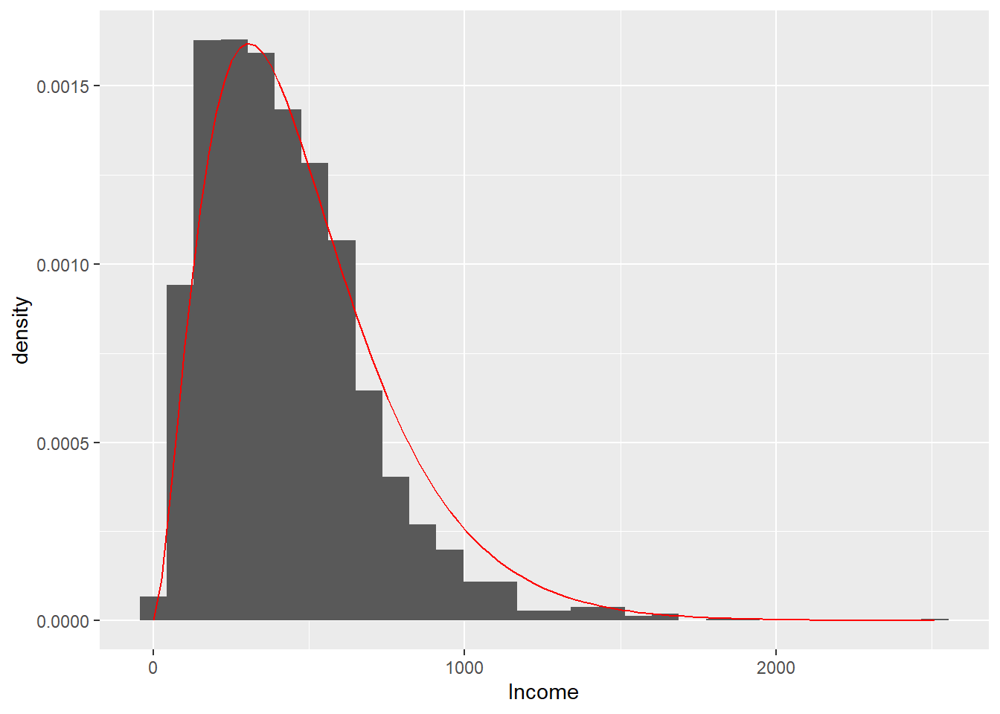
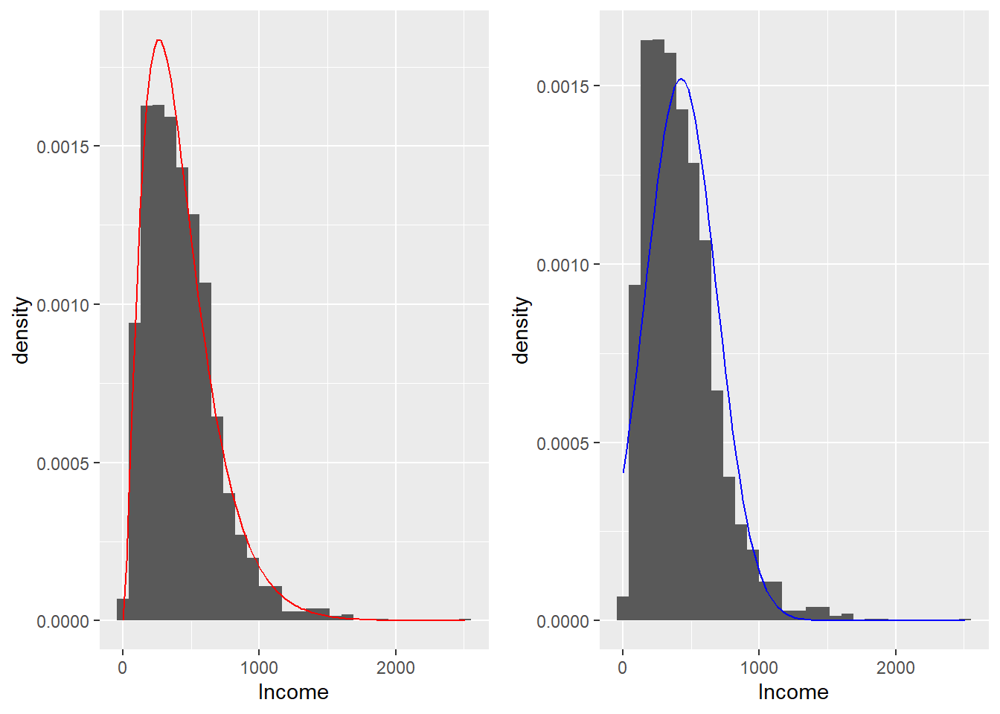
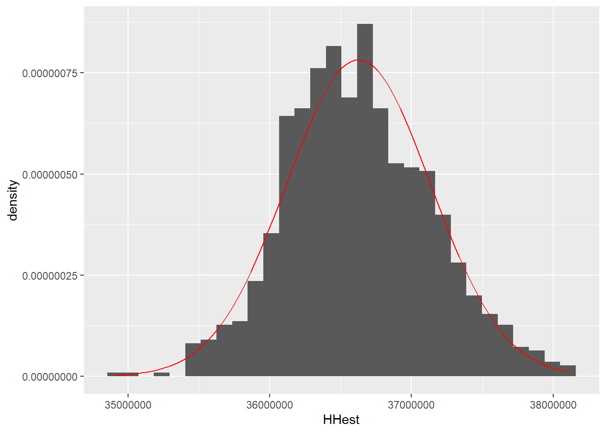
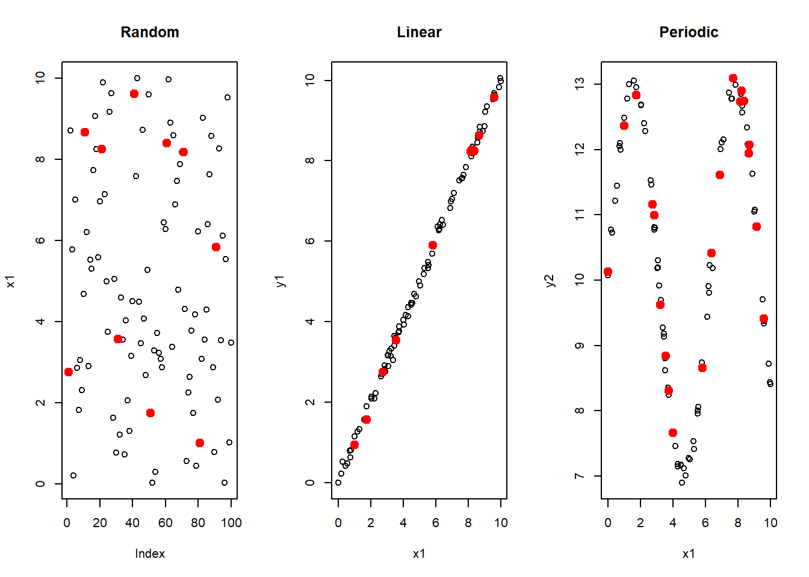
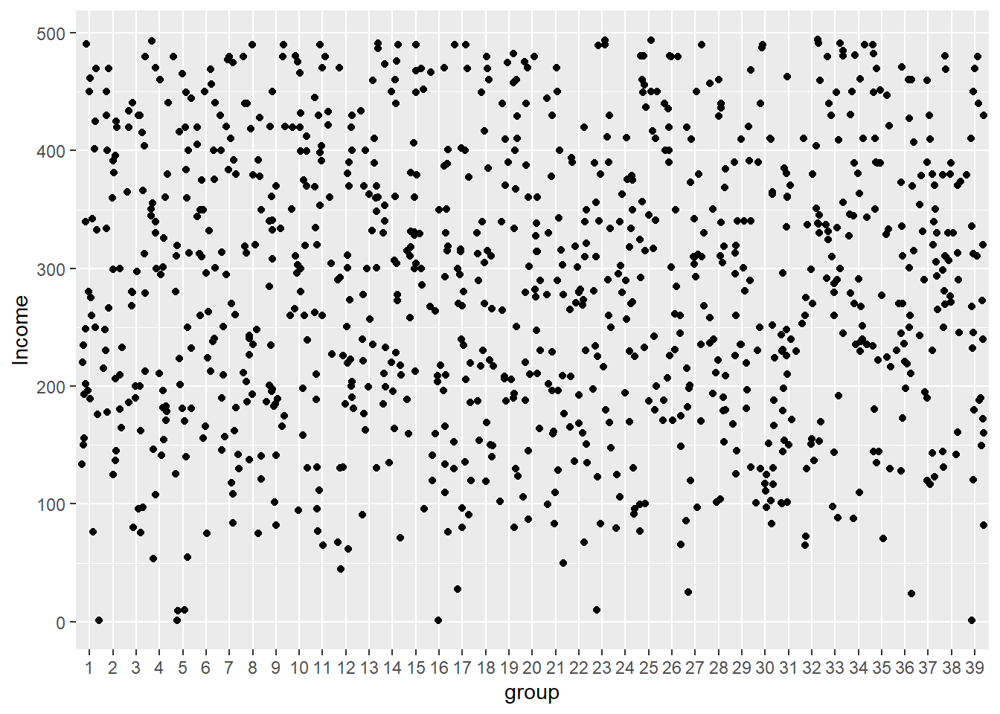
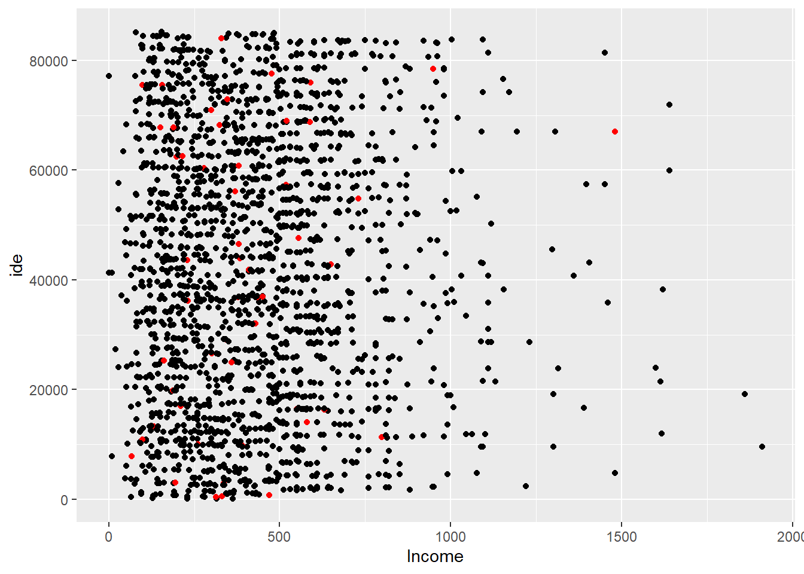

N <- length(U)
sam <- sample(N, 2, replace = FALSE)
U[sam][1] "Erik" "Sharon"Samples are not given; samples must be selected, assigned, or captured. The sample size is not always fixed. In sampling studies, the sample size is almost always a random variable. The data are not always independent or identically distributed and are usually not selected from a single population, but from composite or complementary subpopulations. Moreover, a single estimate is not produced; a set of estimates is produced. Thus, the story we have always been told is wrong.
Leslie Kish in Frankel and King (1996)
When the sampling frame available for sample selection is a list containing the identification and location of the elements in the population, sampling designs are used that allow those elements to be included in the sample directly. That is, in sample selection, the population elements are the sampling units themselves. Once the sampling procedure has selected the sample of elements, the next step is to measure the characteristic of interest \(y_k\) for each element in the selected sample (\(k \in s\)).
This chapter describes the most important element sampling designs, some of which are widely used in practice, while others have the feature of having a variable or random sample size. When the sampling frame contains continuous auxiliary information for each element of the population, this information will be used in sample selection, inducing designs proportional to size. When the sampling frame contains discrete auxiliary information, stratified sampling designs will be used; these often allow greater precision when the characteristic of interest behaves differently in each stratum or population group.
For each sampling design, a theoretical description is provided; the population \(U\) will be used to carry out some lexical-graphic exercises that describe the behavior of the sampling strategy. In addition, the Lucy population will be used and, with the help of the TeachingSampling package, a single sample will be selected for the subsequent estimation of the parameters of interest. There will also be practical real-life examples that allow a better understanding of the design characteristics and better judgment when deciding which sampling design should be implemented in particular cases.
The sampling strategies implemented in this chapter correspond to the use of the Horvitz-Thompson estimator together with sampling designs without replacement and/or the use of the Hansen-Hurwitz estimator in sampling designs with replacement.
Simple random sampling can be seen as the most basic form of sample selection. It assumes the existence of homogeneity in the population values of the characteristic of interest. Starting from this assumption, this design provides identical selection probabilities for each of the possible samples belonging to the support \(Q\). Lohr (2000) gives an example of the use of the simple random sampling design by saying that, when the population is homogeneous, the researcher does not need to examine all elements of the population, just as the person in charge of a medical analysis does not need to obtain all the blood to measure the amount of red blood cells.
A simple random sample without replacement of size \(n\) is chosen so that every possible realized sample of size \(n\) has the same probability of being selected. Unlike the Bernoulli sampling design, the simple random sampling design without replacement has the feature of having fixed size. A simple random sample with replacement, of size \(m\) from a population of \(N\) elements, is the drawing of \(m\) independent samples of size 1, where each element is drawn from the population with the same probability.
Lehtonen and Pahkinen (2003) state that this sampling design is not very common in practice and basically serves two functions. First, it provides a baseline for comparing relative efficiency with other sampling designs. Second, within more sophisticated sampling designs such as stratified sampling designs or cluster sampling designs, simple random sampling can be used as a final method for selecting primary units.
A sampling design is said to be simple random without replacement if all possible samples of size \(n\) have the same probability of being selected. Thus, \[\begin{equation} p(s)= \begin{cases} \frac{1}{\binom{N}{n}} &\text{if $\#s=n$}\\ 0 &\text{otherwise} \end{cases} \end{equation}\]
Defining \(Q\) as the support that contains all possible samples of size \(n\), there are \(\binom{N}{n}\) samples belonging to \(Q\). In other words,
\[\begin{equation*} \#(Q)=\binom{N}{n} \end{equation*}\]
Note that \(\sum_{s\in Q}p(s)=1\) because \(\#Q=\binom{N}{n}\).
For many years, sampling theory focused on the extraction of random samples rather than on the construction of estimators. With the major advantage of new processors, that issue becomes secondary. The following are two methods for selecting a simple random sample of size \(n\) from a population of size \(N\). There are many methods for selecting a random sample without replacement; this section discusses two selection algorithms. The first uses a simpler assumption and can be compared with the well-known method of drawing a ball; however, Tillé (2006) states that this method is computationally inefficient. The second method, based on a sequential algorithm, allows the sample to be selected with a single pass through the sampling frame.
Sunter (1977) has proved that the following random ordering method yields a simple random sample. To draw a sample of size \(n\) from a universe of \(N\) objects,
It is necessary to make sure that each \(\xi_k\) has a large number of decimal places to avoid ties (repeated random numbers).
Fan et al. (1962) implemented the following sequential sampling algorithm (because the sampling frame is traversed element by element and the inclusion or rejection of the object in the sample is decided). Interestingly, thirteen years later Bebbington (1975) published the same method (in a one-page article), although without writing any formula.
In general, suppose that the sampling frame has \(N\) individuals and that a random sample of \(n\) individuals is to be selected. Thus, for individual \(k\) \((k=1,2,...,N)\), we have:
Because this algorithm stops when \(n=n_k\), it is very efficient: it ensures a simple random sample and in some cases does not require traversing the entire sampling frame.
To select simple random samples, R includes the sample function. By default, it selects samples without replacement. Thus, for example, to select a random sample of size \(n=2\) without replacement from the example population U of size \(N=5\), we have:
N <- length(U)
sam <- sample(N, 2, replace = FALSE)
U[sam][1] "Erik" "Sharon"The selection and rejection algorithm is implemented in the S.SI function from the TeachingSampling package. Its arguments are the population size N, the desired sample size n, and a vector of random numbers e which, by default, is assigned by generating N realizations of a random variable with uniform distribution on the interval \(]0,1[\).
To select a random sample without replacement of size \(n=2\) by the selection and rejection method from the example population U of size \(N=5\), it is enough to type the following code.
sam <- S.SI(N, 2)
U[sam][1] "Ken" "Erik"Note that the result of the S.SI function is a vector of indices, which, when applied to the identifier, gives a selected sample made up of the elements Erik and Leslie.
The following output shows each of the N=5 steps of the algorithm. The random numbers used are in the column called ek, and the indices of the selected sample are in the column sam.
k Nombre ek ck nk sam
1 Yves 0.4938 0.4000000 0 0
2 Ken 0.7044 0.5000000 0 0
3 Erik 0.4585 0.6666667 1 3
4 Sharon 0.6747 0.5000000 1 0
5 Leslie 0.8565 1.0000000 2 5The Bernoulli sampling design coincides with the simple random sampling design without replacement when the sample size is considered fixed and equal to \(n\).
Proof.
Using the properties of conditional probability, we have \[\begin{align*} Pr(S=s|n(S)=n)&=\frac{Pr(S=s\text{ and }n(S)=n)}{Pr(n(S)=n)}\\ &=\frac{\pi^n(1-\pi)^{N-n}}{\binom{N}{n}\pi^n(1-\pi)^{N-n}}=\frac{1}{\binom{N}{n}} \end{align*}\] which coincides with expression (3.2.1).
An immediate consequence of the preceding result is that another sample selection method for a Bernoulli sampling design is to choose the sample size randomly according to a binomial distribution \(Bin(N,\pi)\) and then select a sample using one of the preceding algorithms for selecting simple random samples without replacement (Tillé 2006).
For a simple random sampling design, the first- and second-order inclusion probabilities are given by: \[\begin{eqnarray} \pi_k &=& \frac{n}{N} \\ \pi_{kl} &=& \frac{n(n-1)}{N(N-1)} \end{eqnarray}\] respectively. The covariance of the indicator variables is given by \[\begin{equation} \Delta_{kl}= \begin{cases} \pi_{kl}-\pi_k\pi_l=-\frac{n}{N^2}\frac{(N-n)}{(N-1)} &\text{for $k\neq l$}\\ \pi_k(1-\pi_k)=\frac{n(N-n)}{N^2} &\text{for $k=l$} \end{cases} \end{equation}\]
Proof.
Using the definition of first-order inclusion probability, we have \[\begin{align*} \pi_k&=Pr(I_k(S)=1)\\ &=\dfrac{\binom{1}{1}\binom{N-1}{n-1}}{\binom{N}{n}}=\frac{n}{N} \end{align*}\] on the other hand, \[\begin{align*} \pi_kl&=Pr(k\in S\text{ and }l\in s)\\ &=Pr(I_k(S)=1\text{ and }I_l(S)=1)\\ &=Pr(I_k(S)=1|I_l(S)=1)Pr(I_l(s)=1)\\ &=\dfrac{n-1}{N-1}\dfrac{n}{N}=\dfrac{n(n-1)}{N(N-1)} \end{align*}\]
For a simple random sampling design, the Horvitz-Thompson estimator of the population total \(t_y\), its variance, and its estimated variance are given by: \[\begin{equation} \hat{t}_{y,\pi}=\frac{N}{n}\sum_Sy_k \end{equation}\] \[\begin{equation} Var_{SRS}(\hat{t}_{y,\pi})=\frac{N^2}{n}\left(1-\frac{n}{N}\right)S^2_{yU} \end{equation}\] \[\begin{equation} \widehat{Var}_{SRS}(\hat{t}_{y,\pi})=\frac{N^2}{n}\left(1-\frac{n}{N}\right)S^2_{yS} \end{equation}\] respectively, where \[\begin{equation} S^2_{yU}=\frac{1}{N-1}\sum_{k\in U}(y_k-\bar{y}_U)^2, \end{equation}\] is the population variance of the characteristic of interest in the universe \(U\), and where \[\begin{equation} S^2_{yS}=\frac{1}{n-1}\sum_{k\in S}(y_k-\bar{y}_S)^2 \end{equation}\] is the sample variance of the values of the characteristic of interest in the random sample \(S\). In addition, \(\bar{y}_S=\frac{\sum_Sy_k}{n}\). On the other hand, note that \(\hat{t}_{y,\pi}\) is unbiased for the population total \(t_y\) of the characteristic of interest \(y\), and that \(\widehat{Var}_{SRS}(\hat{t}_{y,\pi})\) is unbiased for \(Var_{SRS}(\hat{t}_{y,\pi})\).
Proof.
By the preceding result, we have \[\begin{equation} \hat{t}_{y,\pi}=\sum_S\frac{y_k}{\pi_k}=\frac{N}{n}\sum_Sy_k. \end{equation}\] The proof of the variances is immediate after replacing the appropriate quantities in the generic expression from the previous chapter and taking into account that \[\begin{align*} \sum\sum_{k\neq l}y_ky_l&=\sum_k\sum_ly_ky_l-\sum\sum_{k=l}y_ky_l=\left(\sum_Uy_k\right)^2-\sum_Uy_k^2 \end{align*}\]
Therefore, \[\begin{align*} Var(\hat{t}_{y,\pi})&=\frac{N^2}{n^2}Var\left(\sum_UI_k(s)y_k\right)\\ &=\frac{N^2}{n^2}\left(\sum_UVar(I_k(s))y_k^2+\sum\sum_{k\neq l}Cov\left(I_k(S),I_l(s)\right)y_ky_l\right)\\ &=\frac{N^2}{n^2}\left(\frac{n(N-n)}{N^2}\sum_Uy_k^2-\frac{n}{N^2}\frac{(N-n)}{(N-1)}\sum\sum_{k\neq l}y_ky_l\right)\\ &=\frac{(N-n)}{n}\left(\sum_Uy_k^2-\frac{1}{N-1}\sum\sum_{k\neq l}y_ky_l\right)\\ &=\frac{(N-n)}{n}\frac{1}{N-1}\left((N-1)\sum_Uy_k^2-\left[\left(\sum_Uy_k\right)^2-\sum_Uy_k^2\right]\right)\\ &=\frac{N(N-n)}{n}\frac{1}{N-1}\left(\sum_Uy_k^2-\dfrac{\left(\sum_Uy_k\right)^2}{N}\right)\\ &=\frac{N^2}{n}\left(1-\frac{n}{N}\right)S^2_{yU} \end{align*}\]
To prove the unbiasedness of the estimated variance, it is sufficient to prove that \(S^2_{ys}\) is unbiased for \(S^2_{yU}\). \[\begin{align*} E(S^2_{yS})&=E\left(\frac{1}{n-1}\left[\sum_Sy_k^2-n\bar{y}_S^2\right]\right)\\ &=\frac{1}{n-1}\left(E\left[\sum_Sy_k^2\right]-nE\left[\frac{\hat{t}_{y,\pi}}{N}\right]^2\right)\\ &=\frac{1}{n-1}\left(\frac{n}{N}\left[\sum_Uy_k^2\right]-\frac{n}{N^2}E\left[\hat{t}_{y,\pi}\right]^2\right)\\ &=\frac{1}{n-1}\left(\frac{n}{N}\left[\sum_Uy_k^2\right]-\frac{n}{N^2}\left[\frac{N^2}{n}\left(1-\frac{n}{N}\right)S^2_{yU}-t_y^2\right]\right)\\ &=\frac{n}{n-1}\left(\frac{1}{N}\left[\sum_Uy_k^2\right]-\frac{1}{n}\left(1-\frac{n}{N}\right)S^2_{yU}-\dfrac{t_y^2}{N^2}\right)\\ &=\frac{n}{n-1}\left(\frac{N-1}{N}S^2_{yU}-\frac{N-n}{nN}S^2_{yU}\right)\\ &=S^2_{yU} \end{align*}\] where we used the fact that \(\bar{y}_S=\frac{\hat{t}_{y,\pi}}{N}\) and also \[\begin{equation*} E(\hat{t}_{y,\pi})^2=Var(\hat{t}_{y,\pi})-t_y^2. \end{equation*}\]
For our example population \(U\), there are \(\binom{5}{2}=10\) possible samples of size \(n=2\). Carry out the lexical-graphic calculation of the Horvitz-Thompson estimator and verify unbiasedness and variance.
For a simple random sampling design, the Horvitz-Thompson estimator for the population mean \(\bar{y}_U\), its variance, and its estimated variance are given by: \[\begin{equation} \hat{\bar{y}}_{\pi}=\frac{\hat{t}_{y,\pi}}{N}=\frac{\sum_Sy_k}{n}=\bar{y}_S \end{equation}\] \[\begin{equation} Var_{SRS}(\hat{\bar{y}}_{\pi})=\frac{1}{N^2}Var(\hat{t}_{y,\pi})=\left(1-\frac{n}{N}\right)\frac{S^2_{yU}}{n} \end{equation}\] \[\begin{equation} \widehat{Var}_{SRS}(\hat{\bar{y}}_{\pi})=\frac{1}{N^2}Var(\hat{t}_{y,\pi})=\left(1-\frac{n}{N}\right)\frac{S^2_{ys}}{n} \end{equation}\] respectively, where \(S^2_{yU}\) and \(S^2_{ys}\) are the variance estimator of the values of the characteristic of interest \(y\) in the universe and in the sample. Note that \(\hat{t}_{y,\pi}\) is unbiased for the population total \(t_y\) of the characteristic of interest \(y\), and that \(\widehat{Var}_{SRS}(\hat{t}_{y,\pi})\) is unbiased for \(Var_{SRS}(\hat{t}_{y,\pi})\).
Note that the construction, calculation, and estimation of the variance are very intuitive. Drawing a parallel with classical inference, suppose that we have an i.i.d. random sample \(X_1,\ldots,X_n\), such that \(X_i\sim(\mu,\sigma^2)\). It is known that an unbiased estimator for the mean \(\mu\) is \(\bar{X}\); it is also known that the variation of this estimator is \(\dfrac{\sigma^2}{n}\).
The operator \(\left(1-\dfrac{n}{N}\right)\) is known as the finite population correction factor. There is only one sample that contains all elements of the population; therefore, if that sample is selected, we expect no variation in the estimator because it will reproduce the parameter exactly, and therefore its variance must vanish. The larger the sample size \(n\) is when a simple random sampling design is used, the smaller the variability of the estimates should become, since the sample will tend to resemble the finite population more closely. Lohr (2000) states that sample size is what determines the precision of the estimates (not the percentage of the population sampled):
If your soup is well stirred, you only need two or three spoonfuls to taste the seasoning, whether you have one liter or twenty liters of soup. A sample of size \(n=100\) from a population of \(N=100 thousand\) elements has almost the same precision as a sample of size \(n=100\) from a population of \(N=100 million\) elements:
Under simple random sampling without replacement, a \(100(1-\alpha)\%\) confidence interval for the population mean is: \[\begin{equation} \left[\bar{y}_S-z_{1-\alpha/2}\sqrt{\left(1-\frac{n}{N}\right)}\frac{S_{yU}}{\sqrt{n}}, \bar{y}_S+z_{1-\alpha/2}\sqrt{\left(1-\frac{n}{N}\right)}\frac{S_{yU}}{\sqrt{n}}\right] \end{equation}\] and since \(S^2_{y_U}\) is usually unknown, the usual approach is to replace it with the sample value \(S^2_{y_s}\). In general, only the researchers conducting the study can decide on its minimum precision. This is expressed as: \[\begin{equation*} Pr(|\bar{y}_S-\bar{y}_U|\leq c)=1-\alpha \end{equation*}\]
Therefore, the quantity to minimize is \(c\), \[\begin{align} c=z_{1-\alpha/2}\sqrt{\left(1-\frac{n}{N}\right)}\frac{S_{yU}}{\sqrt{n}} \end{align}\]
and solving for n, we have: \[ \begin{aligned} n\geq\frac{n_0}{1+\frac{n_0}{N}} \end{aligned} \tag{3.1}\]
with \(n_0=\frac{z^2_{1-\alpha/2}S^2_{y_U}}{c^2}\). The inequality holds because, when the sample size increases, \(c\) decreases. In some cases, the goal is to achieve a relative precision given by: \[\begin{equation*} P\left(\left|\frac{\bar{y}_S-\bar{y}_U}{\bar{y}_U}\right|\leq c\right)=1-\alpha \end{equation*}\]
which can equivalently be written as: \[\begin{equation*} P\left(\left|\bar{y}_S-\bar{y}_U\right|\leq c|\bar{y}_U|\right)=1-\alpha \end{equation*}\]
the quantity to minimize is: \[\begin{align} c|\bar{y}_U|=z_{1-\alpha/2}\sqrt{\left(1-\frac{n}{N}\right)}\frac{S_{yU}}{\sqrt{n}} \end{align}\]
and solving for n, we have: \[ \begin{aligned} n\geq\frac{k_0}{1+\frac{k_0}{N}} \end{aligned} \tag{3.2}\]
with \(k_0=\frac{z^2_{1-\alpha/2}S^2_{yU}}{\bar{y}_U^2c^2}=\frac{z^2_{1-\alpha/2}CV^2}{c^2}\). The inequality holds because, when the sample size increases, \(c|\bar{y}_U|\) decreases.
Under a simple random design, a \(100(1-\alpha \%)\) confidence interval for the population mean \(\bar{y}_U\) can be written as \[\begin{equation} \bar{y}_S(1\pm A) \end{equation}\]
where \(A\) is given by \[\begin{align} A=z_{1-\alpha/2}\sqrt{\left(1-\frac{n}{N}\right)}\frac{S_{ys}}{\sqrt{n}\bar{y}_S}= z_{1-\alpha/2}\sqrt{\left(1-\frac{n}{N}\right)}\frac{cv}{\sqrt{n}} \end{align}\]
Assuming that \(CV \doteq cv\) and that \(\frac{n}{N}\) is negligible, we can determine a sample size to maintain a given precision. Therefore, \(A\) is rewritten as \[\begin{align*} A\doteq z_{1-\alpha/2}\frac{CV}{\sqrt{n}} \end{align*}\]
and solving for \(n\), we have \[\begin{align*} n\geq z^2_{1-\alpha/2}\frac{CV^2}{A^2} \end{align*}\]
With a confidence level of \(\alpha=5\%\), assuming that the estimated coefficient of variation converges to the population coefficient of variation and that the sampling fraction is negligible, to obtain precision \(A<3\%\): a) if \(CV=0.5\), the sample size must be greater than 1067 units; b) if \(CV=1.0\), the sample size must be greater than 4268 units; and c) if \(CV=1.5\), the sample size must be greater than 9604 units. That is, the more dispersed the population is with respect to the mean, the larger the sample size must be to achieve a given precision.
To use the preceding formulas, a good sample size is required, because the classical central limit theorem (infinite universe) is not the same as the one applied here. Hájek (1960) shows that, when simple random sampling is used (finite universe) and under certain regularity conditions known as Noether’s conditions, if \(n\), \(N\), and \(N-n\) are large, that is, if the sampling fraction \(f=n/N\) is far from 0 and 1, then \[\begin{equation*} \frac{\bar{y}_S-\bar{y}_U}{\sqrt{\left(1-\frac{n}{N}\right)} \frac{S_{yU}}{\sqrt{n}}}\longrightarrow Normal(0,1) \end{equation*}\]
When a confidence interval is to be established, the reliability of the interval is guaranteed by the unbiasedness of the Horvitz-Thompson estimator. To ensure a given precision, it is necessary to know the population variance of the characteristic of interest or the coefficient of variation of the estimator; in these terms, when the estimated coefficient of variation (cve) is below 3%, it is an excellent case; between 3 and 5%, it is good; between 5 and 10%, it is fair; between 10 and 15%, it is barely presentable; if it is above 15%, it is not considered good. In this case, some official statistics agencies do not present the coefficient of variation, even when it is known.
Of course, some population quantities needed to estimate the sample size are unknown; in fact, if they were known, there would be no need to conduct any study, because the population parameters of interest would be known directly. Lohr (2000) considers three scenarios for making a preliminary estimate of the parameters of interest:
The first case concerning the estimation of population subgroups is that of subpopulations called domains. In many investigations it is necessary to carry out estimates for the population as a whole and also for its subgroups (called domains by the United Nations Subcommission on Sampling). Domains are identified once the information for the elements has been recorded. Domains must satisfy the following characteristics:
For example, consider estimating the total labor force in firms with less than two years of operation. Clearly, the population is divided into two domains: the first concerns firms with less than two years of operation and the second firms with two or more years of operation.
A domain \(U_d\) is a specific subpopulation or population subgroup that satisfies the following conditions:
Domain estimation is characterized by the fact that the membership of population units in the domain is unknown. That is, to know which population units belong to the domain, it is necessary to carry out the measurement process.
Hartley (1959) developed and unified the theory of domain estimation applicable to any sampling design. Durbin (1967) obtained similar results. The guidelines for domain estimation are given below: to estimate the total of a domain \(U_d\), given by \[\begin{equation} t_{yd}=\sum_{Ud}y_k \end{equation}\] it is first necessary to construct an indicator function \(z_{dk}\) for each element of the population, indicating the element’s membership in the domain, as given by the following definition.
Let \(z_{dk}\) be the indicator function of domain \(U_d\), given by \[\begin{equation} z_{dk}= \begin{cases} 1 &\text{if $k\in U_d$}\\ 0 &\text{otherwise} \end{cases} \end{equation}\]
Now, by multiplying the membership variable \(z_{dk}\) by the value of the characteristic of interest \(y_k\), a new variable \(y_{dk}\) is created, given by \(y_{dk}=z_{dk}y_k\). Once it has been constructed, the principles of the Horvitz-Thompson estimator can be used to find an unbiased estimator of the total of the characteristic of interest in domain \(U_d\).
The total of the variable of interest in domain \(U_d\) is given by \[\begin{equation} t_{yd}=\sum_{U}y_{dk}, \end{equation}\] the size of domain \(U_d\) takes the following expression \[\begin{equation} N_d=\sum_{U}z_{dk}, \end{equation}\] so that the mean of the characteristic of interest in domain \(U_d\) is written as \[\begin{equation} \bar{y}_{U_d}=\frac{t_{yd}}{N_d}=\frac{\sum_{U}y_{dk}}{N_d} \end{equation}\]
Under simple random sampling without replacement, the Horvitz-Thompson estimator for the domain total \(t_{yd}\), its variance, and its estimated variance are given by \[\begin{equation} \hat{t}_{yd,\pi}=\frac{N}{n}\sum_Sy_{dk}=\frac{N}{n}\sum_{S_d}y_k \end{equation}\] \[\begin{equation} Var(\hat{t}_{yd,\pi})=\frac{N^2}{n}\left(1-\frac{n}{N}\right)S^2_{y_dU} \end{equation}\] \[\begin{equation} \widehat{Var}(\hat{t}_{yd,\pi})=\frac{N^2}{n}\left(1-\frac{n}{N}\right)S^2_{y_dS} \end{equation}\] respectively, where \(S_d=U_d \cap S\) refers to the set formed by the intersection of sample \(S\). In addition, \[\begin{equation*} S^2_{y_dU}=\frac{1}{N-1}\left(\sum_{k\in U}y_{dk}^2-\frac{(\sum_{k \in U}y_{dk})^2}{N}\right) \end{equation*}\] represents the population variance of the characteristic of interest and \[\begin{equation*} S^2_{y_dS}=\frac{1}{n-1}\left(\sum_{k\in S}y_{dk}^2-\frac{(\sum_{k \in S}y_{dk})^2}{n}\right) \end{equation*}\] the sample variance of the values of the characteristic of interest.
Note that in the expression \(S^2_{y_dU}\) the values involved are the values of the characteristic of interest if the element belongs to the domain and zeros if the element does not belong to the domain; the same occurs with \(S^2_{y_dS}\). Therefore, the preceding expressions will take large values because of the inclusion of zeros; this is the price that must be paid for not knowing the elements’ domain membership.
Under simple random sampling without replacement, the Horvitz-Thompson estimator for the absolute size of a domain \(N_d\), its variance, and its estimated variance are given by \[\begin{equation} \hat{N}_{d,\pi}=\frac{N}{n}\sum_Sz_{dk}=\frac{N}{n}\sum_{S_d}z_k \end{equation}\] \[\begin{equation} Var(\hat{N}_{d,\pi})=\frac{N^2}{n}\left(1-\frac{n}{N}\right)S^2_{z_dU} \end{equation}\] \[\begin{equation} \widehat{Var}(\hat{N}_{d,\pi})=\frac{N^2}{n}\left(1-\frac{n}{N}\right)S^2_{z_ds} \end{equation}\] respectively, where \(S^2_{z_dU}\) and \(S^2_{z_ds}\) are the population variance and sample variance of the values of the characteristic of interest \(z_{dk}\).
Note that in the expression \(S^2_{z_dU}\) the values involved are ones if the element belongs to the domain and zeros if the element does not belong to the domain; the same occurs with \(S^2_{y_ds}\).
Under simple random sampling without replacement, the Horvitz-Thompson estimator for the relative size of a domain \(P_d\), its variance, and its estimated variance are given by \[\begin{equation} \hat{P}_{d,\pi}=\frac{1}{N}\sum_S\frac{N}{n}z_{dk}=\frac{1}{n}\sum_Sz_{dk}=\frac{n_d}{n} \end{equation}\] \[\begin{equation} Var(\hat{P}_{d,\pi})=\frac{1}{n}\left(1-\frac{n}{N}\right)S^2_{z_dU} \end{equation}\] \[\begin{equation} \widehat{Var}(\hat{P}_{d,\pi})=\frac{1}{n}\left(1-\frac{n}{N}\right)S^2_{z_ds} \end{equation}\] respectively, where \(S^2_{z_dU}\) and \(S^2_{z_ds}\) are the variance estimator of the values of the characteristic of interest \(y_d\) in the universe and in the sample.
Under simple random sampling without replacement, the Horvitz-Thompson estimator for the mean of the characteristic of interest in a domain \(\bar{y}_{U_d}\), its variance, and its estimated variance are given by \[\begin{equation} \hat{\bar{y}}_{U_d,\pi}=\frac{\frac{N}{n}\sum_Sy_{dk}}{N_d} \end{equation}\] \[\begin{equation} Var(\hat{\bar{y}}_{U_d,\pi})=\frac{1}{N_d^2}\frac{N^2}{n}\left(1-\frac{n}{N}\right)S^2_{y_dU} \end{equation}\] \[\begin{equation} \widehat{Var}(\hat{\bar{y}}_{U_d,\pi})=\frac{1}{N_d^2}\frac{N^2}{n}\left(1-\frac{n}{N}\right)S^2_{y_ds} \end{equation}\]
To use the preceding estimator, it is necessary to know beforehand the value of the absolute size of the domain \(N_d\). In practice, this value is rarely known; therefore, an alternative and completely intuitive estimator of the mean of the characteristic of interest in a domain is its sample mean in the domain of interest. Thus, the alternative estimator takes the following expression
\[\begin{equation} \widehat{y}_{S_d}=\frac{\hat{t}_{yd,\pi}}{\hat{N}_{d,\pi}}=\frac{\sum_Sy_{dk}}{z_{dk}}=\frac{\sum_{S_d}y_k}{n_d} \end{equation}\]
Because the two quantities in the numerator and denominator are random, a ratio is being estimated. Therefore, the calculation and estimation of the variance of the preceding estimator are beyond the scope of this chapter and will be explained where appropriate.
One of the reasons the government conducts the economic growth survey for the industrial sector is not only to measure social and tax impacts, but also to seek new growth strategies focused on the firms that make up this sector. Recently, with the technology boom and the massive use of the internet, marketing strategies have changed both in form and substance.
A few years ago, firms with very high performance, classified within a large industrial level, could afford to place a modest 900-TRP commercial on television, while medium-sized firms had a budget that barely allowed them to place a radio commercial. Of course, the advertising strategy of small firms consisted of placing an ad in the yellow pages.
However, as technology changes and evolves, people’s habits do as well. It is very common for a firm’s financial, accounting, and strategic operations to be centered on an internet-connected server. Verbal communication itself has been replaced by high technological standards through virtual conversations; official communication has displaced the postal mailbox with email, which allows real-time receipt of messages regardless of the spatial-temporal location of the recipient or the sender. Thus, people spend more time in front of a computer than in front of the television or listening to the radio; the yellow pages are being replaced by meta-search engines of the global information network, giants such as Google, Yahoo, and MSN.
Marketing managers (where relevant), together with presidents or managers of firms in the industrial sector, have rethought their old advertising strategies and have gradually migrated advertising channels. Large firms continue to advertise on television, medium-sized firms continue to do so on radio, and small firms still have the same old classified ad in the yellow pages section. However, at all levels of the industrial sector, firms have begun to manage their clients and/or potential clients more effectively.
Firms are using mass email lists to publicize their competitive advantages by sending virtual portfolios of the products and services they offer. It is believed that this marketing practice has increased business productivity because, through internet advertising or SPAM, firms obtain more clients and therefore more contracts, thus helping reduce unemployment and gaining tax advantages.
The government wants to corroborate this hypothesis and, depending on the results of the study, implement a free training program for firms that have not yet entered the information sphere through massive use of the internet computer network. The government budget is a few million dollars, so very precise estimates are needed to answer the research objective.
The sampling strategy to be used is the following: the Horvitz-Thompson estimator applied to a simple random sampling design without replacement. A pilot sample of size 30 is selected from the population. To do this, once the Lucy data file has been loaded, we use the sample function to draw the pilot sample. Because the characteristic of interest is firms’ income, we take the variance and mean values as estimates that will be used to calculate the sample size.
data(BigLucy)
attach(BigLucy)
N <- dim(BigLucy)[1]
sam <- sample(N, 100)
Inc.pilot <- Income[sam]
mean(Inc.pilot)[1] 384var(Inc.pilot)[1] 41420The values that will be used in estimating the sample size are the sample variance equal to 66.952 and the sample mean equal to 455; with these values, the estimated coefficient of variation is 0.57. A sample size that provides precise estimates must be chosen; the sample size depends on the precision required to meet the objectives of the study.
However, this calculation can be checked by restricting the estimates through a relative error.
Suppose that official sources have provided access to information from past studies that modeled the characteristic of interest Income using the Gamma family of distributions with shape parameter 2.7 and scale parameter 180. By simulating \(N=2396\) values from a gamma distribution with the preceding parameters, the variance values for the characteristic of interest, and therefore an estimate of the sample size, can be estimated.
bary <- mean(Income)
sdy <- sd(Income)
x <- seq(min(Income), max(Income), by = 10)
a <- 2.7
b <- 180ggplot(BigLucy, aes(x = Income)) +
geom_histogram(aes(y = ..density..)) +
stat_function(fun = dgamma, args = list(shape = a, scale = b), colour = "red")
Income and its possible modeling under the gamma distribution.
Determining the sample size for this investigation using the sampling strategy mentioned at the beginning of the section, and considering that the variance estimate from the pilot sample may be small, results in a sample of size \(n=400\) firms in the industrial sector. Since the population size is \(N=2396\), the inclusion probability for all elements is \(\pi_k=\dfrac{400}{2396}\cong0.17\).
R includes the sample function for selecting samples with or without replacement. In this case it can be used as in the selection of the pilot sample. However, to select a sample using the selection and rejection algorithm, the TeachingSampling package provides the S.SI function, which will be used in selecting 400 firms from the industrial sector.
First, the Marco file containing the sampling frame for sample selection is loaded into R. The function parameters, N and pik, are set. This function returns a vector containing the indices of the elements selected in the sample. In this particular case, the first selected element is number 7 and the last is number 2395.
data(BigLucy)
attach(BigLucy)
N <- dim(BigLucy)[1]
n <- 2000
sam <- S.SI(N, n)
sample_data <- BigLucy[sam, ]
attach(sample_data)
head(sample_data) ID Ubication Level Zone Income Employees Taxes SPAM ISO
97 AB0000000097 C0174332K0127565 Small County1 378 30 6.0 no no
103 AB0000000103 C0119815K0182082 Small County1 447 78 9.0 no no
108 AB0000000108 C0107937K0193960 Small County1 145 43 0.5 no no
207 AB0000000207 C0062155K0239742 Small County1 128 66 0.5 yes no
253 AB0000000253 C0051568K0250329 Small County1 232 47 2.0 no no
262 AB0000000262 C0171468K0130429 Small County1 82 13 0.5 no no
Years Segments
97 1.8 County1 10
103 13.7 County1 11
108 26.1 County1 11
207 12.8 County1 21
253 23.1 County1 26
262 5.2 County1 27n <- dim(sample_data)[1]
n[1] 2000By applying the indices obtained by the S.SI function to the sampling frame, we obtain the identification and location of the firms selected in the sample. Once the data collection stage has been completed, that is, once each selected element has been measured, estimation is carried out. We will obtain a Lucy data file containing the values of the characteristics of interest for the selected firms, which will be attached to R using the attach function.
The result estimation stage is carried out using the E.SI(N,n,y) function from the TeachingSampling package, whose arguments are y, a vector containing the values of the characteristic of interest in the sample, N, the population size, and n, the selected sample size. In this case, the length of each vector is \(n=400\). This function returns the estimate of the population total of y using the Horvitz-Thompson estimator, its variance estimate, and its coefficient of variation. For example, the variable Income inside the object target_variables contains the values of the income declared in the last year by 400 firms in the industrial sector belonging to the sample. The estimate for this characteristic is obtained with the following code:
target_variables <- data.frame(Income, Employees, Taxes)
E.SI(N, n, target_variables)| N | Income | Employees | Taxes | |
|---|---|---|---|---|
| Estimation | 85296 | 37172764.5 | 5429858.1 | 1040291.3 |
| Standard Error | 0 | 507102.1 | 62021.8 | 32370.2 |
| CVE | 0 | 1.4 | 1.1 | 3.1 |
| DEFF | NaN | 1.0 | 1.0 | 1.0 |
table 3.1 shows the results obtained for this particular case. Note that better results are obtained than when using a Bernoulli sampling design. However, comparing these total income results for the industrial sector with past measurements is not enough; estimates are also desired for the domain or subgroup of firms that use SPAM delivery as an advertising strategy.
The Domains function contained in the TeachingSampling package is used to obtain the indicator variables \(z_{dk}\) for each domain; the only argument of the function is a membership vector for each individual. In this case, the membership vector is SPAM, and the output of this function is a matrix of ones and zeros in which each column is dichotomized. There are as many columns as population subgroups, and in each column the number one implies the element’s membership in the domain and zero its nonmembership.
domains <- Domains(SPAM)
head(domains) no yes
[1,] 1 0
[2,] 1 0
[3,] 1 0
[4,] 0 1
[5,] 1 0
[6,] 1 0To estimate the absolute size of each domain, all that must be done is to multiply the matrix of characteristics of interest (in this case, the matrix called target_variables) by each column of the matrix resulting from the dichotomization. The following output shows this clearly for the domain of the population that does use SPAM as an advertising method.
spam_yes <- domains[, 2] * target_variables
head(spam_yes) Income Employees Taxes
1 0 0 0.0
2 0 0 0.0
3 0 0 0.0
4 128 66 0.5
5 0 0 0.0
6 0 0 0.0Whereas for the domain that does not use SPAM, the following output is obtained
spam_no <- domains[, 1] * target_variables
head(spam_no) Income Employees Taxes
1 378 30 6.0
2 447 78 9.0
3 145 43 0.5
4 0 0 0.0
5 232 47 2.0
6 82 13 0.5Using the E.SI function on the matrix resulting from the dichotomization, we obtain the estimates of the absolute sizes of each domain. In this case, it is estimated that 1420 firms are already using other radical advertising techniques, while the remaining 976 are not. Note that the variance of each estimate is the same; this is clear because the values of this characteristic of interest are zeros and ones and therefore the variance structure is identical in each case.
E.SI(N, n, domains) N no yes
Estimation 85296 33649.3 51646.7
Standard Error 0 921.4 921.4
CVE 0 2.7 1.8
DEFF NaN 1.0 1.0It is clear that there is a trend in the industrial sector toward virtual advertising through SPAM email. The following figures are the truly important ones, since they show that firms that use SPAM have higher income, employ more people, and contribute a larger amount of money in taxes; this occurs because there are more firms that use SPAM than firms that do not.
E.SI(N, n, spam_no)
E.SI(N, n, spam_yes)Since \(N_d\) is unknown, we can use the alternative estimator given by expression (3.2.38) to obtain an estimate (although not the variance or the c.v.e.) of the mean of the characteristic of interest in each domain. We simply take the estimates \(t_{yd}\) and divide them by the estimate of \(N_d\). The following tables summarize the estimates for each domain of interest.
| N | Income | Employees | Taxes | |
|---|---|---|---|---|
| Estimation | 85296 | 13452714.5 | 2095936.0 | 333059.6 |
| Standard Error | 0 | 460235.6 | 67833.5 | 17876.8 |
| CVE | 0 | 3.4 | 3.2 | 5.4 |
| DEFF | NaN | 1.0 | 1.0 | 1.0 |
| N | Income | Employees | Taxes | |
|---|---|---|---|---|
| Estimation | 85296 | 23720049.9 | 3333922.1 | 707231.8 |
| Standard Error | 0 | 597585.6 | 77926.8 | 30957.9 |
| CVE | 0 | 2.5 | 2.3 | 4.4 |
| DEFF | NaN | 1.0 | 1.0 | 1.0 |
Särndal et al. (1992) consider a survey to measure household income. The sampling frame is a list of individuals, and a sample of size \(n\) is selected by simple random sampling without replacement; the household corresponding to the individual is identified and the corresponding measurement is then carried out. The inclusion probability of a household \(h\) composed of \(M<n\) individuals can be modeled by means of the hypergeometric distribution, as follows:
\[\begin{align*} \pi_{H}&=Pr(H\in s)\\ &=1-Pr(H \notin s)\\ &=1-Pr(\text{None of the $M$ appeared in the sample of size $n$})\\ &=1-\frac{\binom{M}{0}\binom{N-M}{n}}{\binom{N}{n}}\\ &=1-\frac{(N-M)!/n!(N-M-n)!}{N!/(N-M)!n!}\\ &=1-\frac{(N-M)!}{N!}\frac{(N-n)!}{(N-M-n)!}\\ &=1-\frac{(N-n)\ldots(N-n-M+1)}{N\ldots(N-M+1)} \end{align*}\]
Assuming that \(N\) and \(n\) are large \((f>0)\), the following approximations are obtained:
In the Bernoulli sampling design, the inclusion probability of all individuals is fixed a priori (by experience or for some other reason) and remains constant throughout the universe. That is, \(\pi_k=\pi\) for all \(k \in U\). A typical example of this design in practice is passenger luggage inspection by customs officials at an airport; the inclusion probability is fixed for each passenger, and by means of a certain (very simple) selection mechanism, the sample is selected as people enter the site. Note that the sample size \(n(S)\) is random because a sample realized by this selection mechanism may include all passengers or no passengers in the population.
Letting \(n(s)\) be the sample size, the Bernoulli sampling design selects sample \(s\) with probability \[ p(s)= \begin{cases} \pi^{n(s)}(1-\pi)^{N-n(s)} &\text{if $s$ has size equal to $n(s)$}\\ 0 &\text{otherwise} \end{cases} \tag{3.3}\]
Selecting a sample with a Bernoulli design involves the following steps:
Since \(\varepsilon_k\sim Unif[0,1]\), we have \(Pr(\varepsilon_k < \pi)=\pi\) for \(k\in U\). Therefore, the inclusion of the \(k\)-th and \(l\)-th individuals, for \(k\neq l\), is independent. This implies that the distribution of \(I_k(S)\) is Bernoulli \(Ber(\pi)\), and the following result holds.
Defining \(Q_r\) as the support that contains all possible samples of size \(r\), there are \(\binom{N}{r}\) samples belonging to \(Q_r\). In other words,
\[\begin{equation*} \#(Q_r)=\binom{N}{r} \ \ \ \ \ \ \ r=0, \ldots, N \end{equation*}\]
However, when \(Q\) is defined as the general support of all possible samples of sizes between \(r=0\) and \(r=N\), we have
\[\begin{equation*} \#(Q)=\sum_{r=1}^N\binom{N}{r}=2^N \end{equation*}\]
Under Bernoulli sampling, the distribution of the sample size \(n(S)\) is binomial \(Bin(N,\pi)\) and \[\begin{equation} Pr(n(S)=r)=\sum_{s\in Q_r}p(s)=\binom{N}{r}\pi^r(1-\pi)^{N-r}, \end{equation}\] with \(r=1,\ldots,N\) and \(Q_r\) the support that contains all possible samples of size \(r\), where \(Q_r \subset Q\).
Proof.
The distribution of \(I_k(S)\) is Bernoulli \(Ber(\pi)\), and the inclusions of individuals in the sample are independent events; therefore, \(n(S)=\sum_UI_k\) follows a binomial distribution. Now, given the sampling design equation 3.3, for any \(s \in Q_r\), \(p(s)=\pi^r(1-\pi)^{N-r}\) holds. Since there are \(\binom{N}{r}\) ways to select a sample of \(r\) elements from a population of size \(N\), we have \(\#(Q_r)=\binom{N}{r}\). Then, summing \(p(s)\) over all samples in the support \(Q_r\) gives the result.
Because \(n(S)\) is random, there are \(2^N\) possible samples in the support \(Q\). Note that \(n(S)\) has a binomial distribution and, therefore, its expectation and variance are given by:
\[\begin{equation} E(n(S))=N \pi \ \ \ \ \ \ \ \ \ Var(n(S))=N(\pi)(1-\pi), \end{equation}\]
Although the researcher has fixed the inclusion probabilities, it can be verified that the Bernoulli sampling design indeed satisfies the conditions established in the previous chapter and also that the inclusion probabilities induced by the sampling design are identical for each element in the population, \(\pi_k=\pi\).
Under the Bernoulli sampling design, it is verified that \[\begin{equation} \sum_{s\in Q}p(s)=1 \end{equation}\]
Proof.
For a population of size \(N\), the sample size can be \(r\) with \(r=0,1,\ldots,N\). It is sufficient to prove that \(\sum_{r=0}^N Pr(n(S)=r)=1\); using the binomial theorem, this follows immediately because \(n(S) \sim Bin(N,\pi)\). Moreover, we have \[\begin{align*} \sum_{s\in Q}p(s) &=\sum_{s\in Q_0}p(s)+\sum_{s\in Q_1}p(s)+\cdots+\sum_{s\in Q_N}p(s)\\ &=\binom{N}{0}\pi^0(1-\pi)^{N-0}+\cdots+\binom{N}{N}\pi^N(1-\pi)^{N-N}\\ &=\sum_{r=0}^N\binom{N}{r}\pi^r(1-\pi)^{N-r}=(\pi+1-\pi)^N=1 \end{align*}\]
For the Bernoulli sampling design, the first- and second-order inclusion probabilities are given by: \[\begin{align} \pi_k&=\pi\\ \pi_{kl}&= \begin{cases} \pi &\text{for $k=l$}\\ \pi^2 &\text{for $k\neq l$} \end{cases} \end{align}\]
Proof.
Taking into account that there are \(\binom{N-1}{r-1}\) samples of size \(r\) that contain the \(k\)-th element, we have \[\begin{align*} \pi_k&=\sum_{\substack{s\ni k\\ s\subset Q}}p(s)\\ &=\sum_{\substack{s\ni k\\ s\subset Q_0}}p(s)+\sum_{\substack{s\ni k\\ s\subset Q_1}}p(s) +\cdots+\sum_{\substack{s\ni k\\ s\subset Q_N}}p(s)\\ &=0+\binom{N-1}{0}\pi(1-\pi)^{N-1}+\ldots+\binom{N-1}{N-1}\pi(1-\pi)^{N-1}\\ &=\sum_{r=0}^{N-1}\binom{N-1}{r}\pi^{r+1}(1-\pi)^{N-1-r}\\ &=\pi\sum_{r=0}^{N-1}\binom{N-1}{r}\pi^{r}(1-\pi)^{N-1-r}=\pi(\pi+(1-\pi))^{N-1}=\pi \end{align*}\] where the result of the binomial theorem (Mood et al. 1974) is used, which states that
\[ \sum_{r=0}^m\binom{m}{r}a^rb^{m-r}=(a+b)^m. \tag{3.4}\]
Now, since the inclusions of population elements in the sample are independent events, then
\[\begin{equation} Pr(k\in S\text{ and }l\in S)=Pr(I_k=1)Pr(I_l=1)=\pi^2 \end{equation}\]
For the Bernoulli sampling design, the Horvitz-Thompson estimator, its variance, and its estimated variance are given by: \[\begin{equation} \hat{t}_{y,\pi}=\frac{1}{\pi}\sum_Sy_k \end{equation}\] \[\begin{equation} Var_{BER}(\hat{t}_{y,\pi})=\left(\frac{1}{\pi}-1\right)\sum_Uy_k^2 \end{equation}\] \[\begin{equation} \widehat{Var}_{BER}(\hat{t}_{y,\pi})=\frac{1}{\pi}\left(\frac{1}{\pi}-1\right)\sum_Sy_k^2, \end{equation}\] respectively
Proof.
The result is immediate because \[\begin{equation} \Delta_{kl}=\begin{cases} \pi_{kl}-\pi_k\pi_l=\pi^2-\pi^2)=0 & \text{for $k\neq l$}\\ \pi_{kk}-\pi_k\pi_k=\pi(1-\pi) & \text{for $k=l$} \end{cases} \end{equation}\] therefore, the double sum in the variance of the Horvitz-Thompson estimator becomes a single sum; the same occurs analogously with the expression for the variance estimate.
Note that if the realized or selected sample is composed of all population units, that is, if a census must be carried out, the inclusion probability for each population element would be \(\pi_k=\pi\). In this case, the Horvitz-Thompson estimator would be given by the following expression \[\begin{equation} \hat{t}_{y,\pi}=\frac{1}{\pi}\sum_Uy_k=\frac{t_y}{\pi}\neq t_y \end{equation}\]
In this case, the Horvitz-Thompson estimator is poor for estimating the population total \(t_y\), and it is suggested to use the alternative estimator for the population total, which, for the particular case of the Bernoulli sampling design, would be given by \[\begin{equation} \hat{t}_{y,alt}=N\widetilde{y}_S=N\dfrac{\sum_S y_k}{n(S)}=N\bar{y}_S. \end{equation}\]
It is easily verified that if \(s=U\), then \(\hat{t}_{y,alt}=t_y\).
For our example population \(U\), there are \(2^5=32\) possible samples. If the inclusion probability is fixed for each element and equal to 0.3, carry out the lexical-graphic calculation of the Horvitz-Thompson estimator and verify unbiasedness and variance.
A measure that compares efficiency between two sampling strategies is the design effect. This practical tool shows the gain or loss in precision when using a sampling strategy more complex than a simple random design without replacement together with the Horvitz-Thompson estimator, and it is defined as follows:
Let \((\hat{T},p(\cdot))\) and \((\hat{T}_{\pi},SRS)\) be two sampling strategies used to estimate the parameter \(T\). The design effect is defined as \[\begin{equation} Deff=\frac{Var_{p}(\hat{T})}{Var_{SRS}\hat{T}_{\pi}}. \end{equation}\]
in particular, the design effect, restricted to the estimation of a population total and using the Horvitz-Thompson estimator in both strategies, takes the following form
\[\begin{equation} Deff=\frac{Var_{p}(\hat{t}_{y,\pi})}{\frac{N^2}{n}\left(1-\frac{n}{N}\right)S^2_{yU}}. \end{equation}\]
When the design effect is greater than one, the variance of the strategy in the numerator is greater than the variance in the denominator; therefore, precision has been lost by using a more complex sampling strategy. If the ratio is less than one, precision has been gained. Cornfield (1951) suggested evaluating the efficiency of a sampling strategy by taking the ratio between its variance and that of the simple random design without replacement with the Horvitz-Thompson estimator. Later, Kish (1965) called it DEFF (design effect).
However, in most cases, calculating this ratio is not simple. Lehtonen and Pahkinen (2003) proposes an estimate of the design effect for totals by estimating the variances that appear in the expression. Thus, we have
An estimator of the design effect \(Deff\) for the population total \(t_y\) is \[ \hat{Deff}=\frac{\widehat{Var}_{p}(\hat{T})}{\frac{N^2}{n}\left(1-\frac{n}{N}\right)S^2_{ys}}. \tag{3.5}\]
Not all parameters behave in the same way; therefore, their design effects will not have the same optimality criterion. That is, if there is an optimality criterion with respect to one parameter, say the population total \(t_y\), that criterion will not necessarily hold for a different parameter, say the population median.
Since the sample size in designs other than simple random sampling without replacement may be variable, it is necessary to ensure that \(n=E_{SRS}(n(S))=E_p(n(S))\) so that there is an objective point of comparison. For example, to compare the efficiency of the Horvitz-Thompson estimator under the Bernoulli sampling design, it is necessary to fix the sample size, because this design is not fixed-size; that is, \(n=E_{SRS}(n(S))=E_{BER}(n(S))=N\pi\). It follows that \(\pi=n/N\).
In this way, we can introduce the efficiency measure of the Bernoulli sampling design with respect to SRS, as follows:
\[\begin{equation} deff=\frac{Var_{BER}(\hat{t}_{y,\pi})}{Var_{SRS}(\hat{t}_{y,\pi})}=1-\frac{1}{N}+\frac{1}{CV_y^2} \cong 1+\frac{1}{CV_y^2} \end{equation}\]
Therefore, if the design effect \(deff\) is equal to 1.8, this implies that the variance of the \(\pi\) estimator under the Bernoulli sampling design is 1.8 times the variance of the \(\pi\) estimator under SRS.
Suppose that a sample must be selected with a Bernoulli sampling design. The expected sample size is desired to be \(N\pi=400\) firms in the industrial sector. Since the population size is \(N=2396\), the value fixed for \(\pi\) is 0.1669. To select the sample, the S.BE(N,prob) function from the TeachingSampling package is used; its parameters are N, the population size, and prob, the value of the inclusion probability for each population element. This function uses the sequential algorithm described in the previous section.
First, the Marco file containing the sampling frame for sample selection is loaded into R. The function parameters, N and prob, are set. This function returns a vector containing the index of the elements selected in the sample. In this particular case, the first selected element is number 2 and the last is number 2394.
data(BigLucy)
N <- dim(BigLucy)[1]
pik <- 0.025
sam <- S.BE(N, pik)
sample_data <- BigLucy[sam, ]
attach(sample_data)
head(sample_data) ID Ubication Level Zone Income Employees Taxes SPAM ISO
92 AB0000000092 C0208289K0093608 Small County1 460 79 9.0 no no
140 AB0000000140 C0275430K0026467 Small County1 250 83 2.0 yes no
163 AB0000000163 C0287847K0014050 Small County1 109 50 0.5 yes no
186 AB0000000186 C0010900K0290997 Small County1 210 54 1.0 no no
196 AB0000000196 C0245792K0056105 Small County1 108 66 0.5 yes no
214 AB0000000214 C0193177K0108720 Small County1 300 18 3.0 yes no
Years Segments
92 39 County1 10
140 39 County1 14
163 25 County1 17
186 27 County1 19
196 22 County1 20
214 21 County1 22n <- dim(sample_data)[1]
n[1] 2229By applying the indices obtained by the S.BE function to the sampling frame, we obtain the identification and location of the firms selected in the sample. Note that the effective sample size is 2229 firms. Once the data collection stage has been completed, we will obtain a Lucy data file containing the values of the characteristics of interest for the selected firms, which will be attached to R using the attach function.
The result estimation stage is carried out using the E.BE(y,prob) function from the TeachingSampling package, whose arguments are y, a vector or matrix containing the values of the characteristics of interest in the sample, and prob, the inclusion probability. In this case, the length of each vector is \(n=2229\). This function returns the estimate of the population total of y using the Horvitz-Thompson estimator, its variance estimate, and its coefficient of variation. For example, the variable Income contains the values of income declared in the last year by 396 firms in the industrial sector belonging to the sample. The estimate for this characteristic is obtained with the following code:
target_variables <- data.frame(Income, Employees, Taxes)
E.BE(target_variables, pik)| N | Income | Employees | Taxes | |
|---|---|---|---|---|
| Estimation | 89160.0 | 37862880.0 | 5568240.0 | 1026140.0 |
| Standard Error | 1864.7 | 930762.3 | 130615.2 | 38093.5 |
| CVE | 2.1 | 2.5 | 2.4 | 3.7 |
| DEFF | Inf | 3.6 | 4.9 | 1.5 |
table 3.4 shows the results obtained for this particular case, where the relative deviation of an estimate, measured as a percentage, is defined as
On the other hand, note that, although the asymptotic distribution of the Horvitz-Thompson estimator is normal, it is necessary to verify the behavior of the estimator with the expected sample size. Several Monte Carlo experiments were carried out to obtain a closer examination of the Horvitz-Thompson estimator of the total of the characteristic Income in the Lucy population. The result of the simulation is shown in the histograms in Figure 3.1. The average of the estimates in each experiment is expected to coincide with the population total, and their variance should approach the variance based on the Bernoulli sampling design.
bary <- mean(Income)
sdy <- sd(Income)
x <- seq(min(Income), max(Income), by = 10)
a <- (bary / sdy)^2
b <- sdy^2 / baryp1 <- ggplot(BigLucy, aes(x = Income)) +
geom_histogram(aes(y = ..density..)) +
stat_function(fun = dgamma, args = list(shape = a, scale = b), colour = "red")
p2 <- ggplot(BigLucy, aes(x = Income)) +
geom_histogram(aes(y = ..density..)) +
stat_function(fun = dnorm, args = list(mean = bary, sd = sdy), colour = "blue")
grid.arrange(p1, p2, ncol = 2)
Income and its possible modeling under the gamma distribution (left) and normal distribution (right).
The mean of the estimates of \(t_y\) is 1035176, which fits well with the corresponding parameter \(t_y=1035217\). The distribution appears symmetric and bell-shaped (the values of the theoretical distribution are shown in the solid red curve), and no large discrepancies are observed between the empirical and theoretical results. In some cases, where the sample size is not sufficiently large, the normal behavior of the estimator must be verified.
A simple random sample with replacement, of size \(m\) from a population of \(N\) elements, is the drawing of \(m\) independent samples of size 1, where each element is drawn from the population with the same probability \[\begin{equation*} p_k=\frac{1}{N} \ \ \ \ \ \forall k\in U \end{equation*}\]
A simple random sampling design with replacement is defined as \[\begin{equation} p(s)= \begin{cases} \frac{m!}{n_1(s)!\ldots n_N(s)!}\prod_U\left(\frac{1}{N}\right)^{n_k(s)} &\text{if $\sum_Un_k(s)=m$}\\ 0 &\text{otherwise} \end{cases} \end{equation}\] where \(n_k(s)\) is the number of times the \(k\)-th element is selected in the realized sample \(s\).
For this sampling design, there are \(\binom{N+m-1}{m}\) possible samples of size \(m\); that is,
\[\begin{equation*} \#(Q)=\binom{N+m-1}{m} \end{equation*}\]
Given the support \(Q\) of all possible samples with replacement of size \(m\), it is verified that the simple random sampling design with replacement is such that \[\begin{align*} \sum_{s\in Q}p(s)=1 \end{align*}\]
Proof.
The proof is immediate because this sampling design is a discrete multinomial density function over \(Q\). \[\begin{align*} \sum_{s\in Q}p(s)&=\sum_{s\in Q}\frac{m!}{n_1(s)!\ldots n_N(s)!}\prod_U\left(\frac{1}{N}\right)^{n_k(s)}\\ &=\sum_{s\in Q}\frac{m!}{n_1(s)!\ldots n_N(s)!}\left(\frac{1}{N}\right)^{n_1(s)}\ldots \left(\frac{1}{N}\right)^{n_N(s)}\\ &=\sum_{\begin{subarray}{c}n_1(s)\ldots n_N(s)\\ \sum_Un_k(S)=m\end{subarray}} \frac{m!}{n_1(s)!\ldots n_N(s)!}\left(\frac{1}{N}\right)^{n_1(s)}\ldots \left(\frac{1}{N}\right)^{n_N(s)}\\ &=\underbrace{\left(\frac{1}{N}+\cdots+\frac{1}{N}\right)^m}_{N\text{ times}}\\ &=1 \end{align*}\] where the result of the multinomial theorem is used, which states that \[\begin{align} \sum_{\begin{subarray}{c}n_1\ldots n_N\\ \sum_Un_k=m\end{subarray}} \frac{m!}{n_1!\ldots n_N!}(p_1)^{n_1}\ldots (p_N)^{n_N}= \left(\sum_{k=1}^Np_k\right)^m \end{align}\]
For a simple random design with replacement, the first- and second-order inclusion probabilities are given by \[\begin{eqnarray} \pi_k &=& 1-\left(1-\frac{1}{N}\right)^m \\ \pi_{kl} &=& 1-2\left(1-\frac{1}{N}\right)^m+\left(1-\frac{2}{N}\right)^m \end{eqnarray}\] respectively.
Proof.
Using Results 2.2.9 and 2.2.10, respectively, gives the proof.
In our example population, the population size is \(N=5\). If we wanted to select a simple random sample with replacement of size \(m=2\), then there would be \(N^m=5^2=25\) possible ordered draws. However, there are only \(\binom{N+m-1}{m}=\binom{6}{2}=15\) possible samples. Each of the possible samples belonging to the support with replacement has the following selection probabilities.
V1 V2 p n1 n2 n3 n4 n5
1 Yves Yves 0.04 2 0 0 0 0
2 Ken Ken 0.04 0 2 0 0 0
3 Erik Erik 0.04 0 0 2 0 0
4 Sharon Sharon 0.04 0 0 0 2 0
5 Leslie Leslie 0.04 0 0 0 0 2
6 Yves Ken 0.08 1 1 0 0 0
7 Yves Erik 0.08 1 0 1 0 0
8 Yves Sharon 0.08 1 0 0 1 0
9 Yves Leslie 0.08 1 0 0 0 1
10 Ken Erik 0.08 0 1 1 0 0
11 Ken Sharon 0.08 0 1 0 1 0
12 Ken Leslie 0.08 0 1 0 0 1
13 Erik Sharon 0.08 0 0 1 1 0
14 Erik Leslie 0.08 0 0 1 0 1
15 Sharon Leslie 0.08 0 0 0 1 1Note that the sum of the probabilities induced by the sampling design is equal to one and that each of them is greater than zero.
Tillé (2006) presents two algorithms for selecting a simple random sample with replacement. The first generally induces \(m\) individual selections, and the second is a sequential method that implements selection through the binomial distribution.
The following selection method is implemented in \(m\) steps, and although it is not computationally efficient, it is well known.
A few decades ago, when today’s technological support did not exist, I cannot imagine how those in charge of sample selection could have used this algorithm. Imagine selecting a sample of 3000 elements without the convenience of a computer.
Tillé (2006) states that this procedure is better than the preceding one because it allows a sample of size \(m\) to be selected in a single pass through the data set.
As seen in previous chapters, R includes the selection of simple random samples with replacement in the sample function; the replace argument simply must be activated with replace=TRUE. Thus, to select a sample with replacement of size \(m=3\), it is only necessary to write the following code.
N <- length(U)
sam <- sample(N, 3, replace = TRUE)
U[sam][1] "Yves" "Erik" "Ken" The procedure for selecting a random sample with replacement of size \(m\) using the sequential algorithm is implemented in the S.WR(N,m) function, whose arguments are N, the population size, and m, the sample size with replacement. Thus, to select a simple random sample with replacement from population \(U\) of size \(N=5\), we have
m <- 3
sam <- S.WR(N, m)
U[sam][1] "Ken" "Erik" "Leslie"Once again, the function output is a vector of indices (not necessarily distinct) of the elements belonging to the selected sample \(s\). This algorithm uses the binomial distribution in each of its steps, so for the selection of the preceding sample made up of Ken, Erik, and Leslie, each of the \(N=5\) steps of the algorithm produced the following results.
k Nombre Bin n Bin p nk
1 Yves 3 0.2000 0
2 Ken 3 0.2500 1
3 Erik 2 0.3333 0
4 Sharon 2 0.5000 2
5 Leslie 0 1.0000 0where Bin n and Bin p are the parameters of the binomial distribution associated with the sequential algorithm. Note that the quantity nk refers to the realization of the variable \(n_k(s)\).
When the quantities from Result 3.3.3 are available, the principles of the Horvitz-Thompson estimator can be implemented to estimate the population total \(t_y\); however, calculating and estimating the variance of this sampling strategy is computationally very complex. For this reason, we will use the Hansen-Hurwitz estimator given by equation 2.10, which estimates the parameter of interest \(t_y\) unbiasedly.
For a simple random sampling design with replacement, the Hansen-Hurwitz estimator of the population total \(t_y\), its variance, and its estimated variance are given by: \[\begin{equation} \hat{t}_{y,p}=\frac{N}{m}\sum_{i=1}^my_i \end{equation}\] \[\begin{equation} Var_{SRSWR}(\hat{t}_{y,p})=N\frac{(N-1)}{m}S^2_{yU} \end{equation}\] \[\begin{equation} \widehat{Var}_{SRSWR}(\hat{t}_{y,p})=\frac{N^2}{m}S^2_{ysr} \end{equation}\] respectively, where \(S^2_{yU}\) is the variance estimator of the values of the characteristic of interest \(y\) in the universe and \(S^2_{ysr}\) is the variance estimator of the values \(y_i\) that belong to the selected sample \((\forall i \in m)\) (not necessarily distinct) in the sample. That is, \[\begin{equation*} S^2_{ysr}=\frac{1}{m-1}\sum_{i=1}^m(y_i-\bar{y}_S)^2. \end{equation*}\] Note that \(\hat{t}_{y,p}\) is unbiased for the population total \(t_y\) of the characteristic of interest \(y\), and that \(\widehat{Var}_{SRSWR}(\hat{t}_{y,p})\) is unbiased for \(Var_{SRSWR}(\hat{t}_{y,p})\).
Proof.
The results are obtained by writing the Hansen-Hurwitz estimator as follows, \[\begin{equation} \hat{t}_{y,p}=\frac{1}{m}\sum_Un_k(S)\frac{y_k}{p_k}=\frac{N}{m}\sum_Un_k(S)y_k \end{equation}\] Therefore, using Result 2.2.8, we have \[\begin{align*} E\left(\hat{t}_{y,p}\right)&=\frac{N}{m}\sum_UE(n_k(S))y_k\\ &=\frac{N}{m}\sum_U\frac{m}{N}y_k=t_y \end{align*}\] On the other hand, assuming that the variables \(Z_i\) are independent and identically distributed, \[\begin{align*} Var\left(\hat{t}_{y,p}\right)&=Var\left(\frac{1}{m}\sum_i^mZ_i\right)\\ &=\frac{1}{m^2}\sum_i^mVar(Z_i)\\ &=\frac{1}{m^2}\sum_i^m\left(\sum_U\frac{1}{N}(Ny_k-t)^2\right)\\ &=\frac{1}{m}\left(\frac{N^2}{N}\sum_U(y_k-\bar{y}_U)^2\right)\\ &=N\frac{(N-1)}{m}S^2_{yU} \end{align*}\] Writing the variance estimator as \[\begin{equation} \widehat{Var}(\hat{t}_{y,p})=\frac{1}{m}\frac{1}{m-1}\sum_Un_k(S)\left(Ny_k-\hat{t}_{y,p}\right)^2 \end{equation}\] we have the unbiasedness given by \[\begin{align*} E\left(\widehat{Var}(\hat{t}_{y,p})\right)&=\frac{1}{m}\frac{1}{m-1}\sum_UE\left(n_k(S)(Ny_k-\hat{t}_{y,p})^2\right)\\ &=\frac{1}{m}\frac{1}{m-1}\sum_UE\left(n_k(S)(Ny_k-t_y)^2-n_k(S)(\hat{t}_{y,p}-t_y)^2\right)\\ &=\frac{1}{m}\frac{1}{m-1}E\left(\sum_Un_k(S)(Ny_k-t_y)^2\right)\\ &\hspace{2cm} -\frac{1}{m}\frac{1}{m-1}E\left((\hat{t}_{y,p}-t_y)^2\sum_Un_k(S)\right)\\ &=\frac{1}{m}\frac{1}{m-1}\left[E\left(\sum_Un_k(S)(Ny_k-t_y)^2\right)-mE\left((\hat{t}_{y,p}-t_y)^2\right)\right]\\ &=\frac{1}{m}\frac{1}{m-1}\left[m\left(\sum_U\frac{m}{N}(Ny_k-t_y)^2\right)-mVar(\hat{t}_{y,p})\right]\\ &=\frac{1}{m}\frac{1}{m-1}\left[m^2Var(\hat{t}_{y,p})-mVar(\hat{t}_{y,p})\right]\\ &=Var(\hat{t}_{y,p}) \end{align*}\]
For our example population \(U\), there are \(\binom{N+m-1}{m}=20\) possible samples with replacement of size \(m=2\). Carry out the lexical-graphic calculation of the Hansen-Hurwitz estimator and verify unbiasedness and variance.
Suppose we want to select a simple random sample with replacement of size \(m=400\) firms in the industrial sector. For sample selection, it is possible to use the sample function built into R. First, the sampling frame must be loaded; it allows the selection, identification, and subsequent location of each individual in the sample with replacement. To select the sample, the function parameters must be entered; in this case, N=2396, the population size, is given by the number of rows (records of firms in the industrial sector) in the sampling frame, and m=400 firms will be selected with replacement.
data(BigLucy)
attach(BigLucy)
N <- dim(BigLucy)[1]
m <- 2000
sam <- sample(N, m, replace = TRUE)However, to select the sample with replacement using the sequential method, the TeachingSampling package provides the S.WR function, whose arguments are N, the population size, and m, the sample size with replacement. The result of the function is a set of indices (not necessarily distinct) which, when applied to the population, gives the values of the characteristic of interest for the selected firms (not necessarily distinct). Note that a selected firm will be taken into account in the estimation stage as many times as it has been selected.
sam <- S.WR(N, m)
sample_data <- BigLucy[sam, ]
attach(sample_data)head(sample_data) ID Ubication Level Zone Income Employees Taxes SPAM ISO
59 AB0000000059 C0064940K0236957 Small County1 470 28 10 yes no
105 AB0000000105 C0300683K0001214 Small County1 388 91 6 no no
123 AB0000000123 C0213877K0088020 Small County1 312 82 4 no no
328 AB0000000328 C0173183K0128714 Small County1 193 81 1 no no
357 AB0000000357 C0236215K0065682 Small County1 220 22 2 yes no
463 AB0000000463 C0087777K0214120 Small County1 235 75 2 no no
Years Segments
59 29.4 County1 6
105 8.2 County1 11
123 43.4 County1 13
328 13.4 County1 33
357 15.3 County1 36
463 4.6 County1 47dim(sample_data)[1] 2000 11The first firm selected by the sequential method is the firm that occupies the second position in the sampling frame; that is, the firm whose unique identification number is AB002. The second and third firms selected correspond to the firm identified with the unique number AB015. If an element has been selected more than once, R automatically codes subsequent selections with a period followed by a number indicating the number of times minus one that the same unit has been selected.
Once the firms are selected, the interviewer’s visit is scheduled, during which the values of the characteristics of interest are recorded. When the database contains the relevant information for all firms selected in the sample with replacement, the totals of the characteristics of interest are estimated. The E.WR function from the TeachingSampling package allows one or several characteristics of interest to be estimated simultaneously. To do this, a data set must be created with the information collected for each of the 400 firms on the characteristics of interest. In this case, we create a data set with the three characteristics of interest Income, Employees, and Taxes.
The E.WR function from the TeachingSampling package has three arguments: N, the population size, m, the sample size with replacement, and the data set (containing the values for the characteristic(s) of interest). The result of the function is the total estimate, the estimated variance, and the corresponding coefficient of variation of the characteristic(s) of interest.
target_variables <- data.frame(Income, Employees, Taxes)
E.WR(N, m, target_variables)table 3.5 shows the particular results of this sampling strategy. Note that, with a smaller sample size, better results are obtained than when using a sampling strategy that considers a Bernoulli design and the Horvitz-Thompson estimator.
| N | Income | Employees | Taxes | |
|---|---|---|---|---|
| Estimation | 85296 | 36113814.6 | 5419579.9 | 981735.6 |
| Standard Error | 0 | 503831.6 | 62403.5 | 32779.0 |
| CVE | 0 | 1.4 | 1.1 | 3.3 |
| DEFF | NaN | 1.0 | 1.0 | 1.0 |
However, using the design effect, we can compare the efficiency of the preceding strategy used with Lucy. Using the definition, we can approximate the measure by
\[\begin{align*} Deff&=\frac{Var_{SRSWR}(\hat{t}_{y,p})}{Var_{SRS}(\hat{t}_{y,\pi})}\\ &=\frac{1}{1-f}\left(1-\frac{1}{N}\right) \cong \frac{1}{1-f} \end{align*}\]
Therefore, for the sampling strategy used above, we have \(Deff=\dfrac{1}{1-\frac{2000}{85296}}=1.02\). This indicates that there is a 2% loss of precision when using the sampling strategy with replacement and the Hansen-Hurwitz estimator. In general, for very small sample sizes compared with \(N\), the two strategies yield very similar results. However, as the sample size grows relative to \(N\), the measure \(Deff\) increases significantly; that is, there is a very large loss of efficiency.
Since the sampling design is with replacement, we want to verify that the asymptotic distribution of the Hansen-Hurwitz estimator is normal. A Monte Carlo simulation is carried out following the same guidelines used in Section 3.1.3, where several Monte Carlo experiments were performed to examine the behavior of the Hansen-Hurwitz estimator for the income characteristic. The result of the simulation is shown in the histograms in Figure 3.3. In this Monte Carlo experiment, the average of the estimates from each experiment coincides with the population total, and the variance of the estimates is expected to approach the variance based on the simple random sampling design.
HHest <- c()
for (i in 1:1000) {
sam <- sample(N, m, replace = TRUE)
HHest[i] <- E.WR(N, m, BigLucy$Income[sam])[1, 2]
}
barHH <- mean(HHest)
sdHH <- sd(HHest)
x <- seq(min(HHest), max(HHest), by = 10)
ggplot(as.data.frame(HHest), aes(x = HHest)) +
geom_histogram(aes(y = ..density..)) +
stat_function(fun = dnorm, args = list(mean = barHH, sd = sdHH), colour = "red")
The mean of the estimates of \(t_y\) is 36625442.85, which fits well with the corresponding parameter \(t_y = 1035217\). Note that the variance of the estimator (through this Monte Carlo experiment) is not very large and that the distribution of the estimator does not show outliers. One must be careful with statements about normality in this case because the distribution, although it appears symmetric and bell-shaped, may in fact be skewed to the right or to the left.
Sometimes, when no sampling frame is available, at least not explicitly, or when the available frame is ordered in a particular way with respect to its labels, the systematic sampling design can be used as an option for sample selection. The most distinctive feature of this sampling design is that all units are assumed to be numbered from 1 to \(N\), at least implicitly, and it is known that the population is partitioned into \(a\) latent population groups. In this context, the population size \(N\) can be written as \[\begin{equation} N=na+c \end{equation}\]
where \(0\leq c < a\) and \(n\), the expected sample size, is defined as the integer part of the quotient \(N/a\). Note that \(c\) is an integer that represents the algebraic remainder of the population total and can easily be seen to take the following form \[\begin{equation} c=N-\left\|\frac{N}{a}\right\|a \end{equation}\]
Here \(\|\frac{N}{a}\|\) represents the integer part of the quotient \(N/a\). Once the groups have been formed, a number between 1 and \(a\), say \(r\), is chosen at random. The sample will be formed systematically by the elements \(r, r+a,r+2a,\ldots,r+(n-1)a\). Note that when \(c=0\), the sample size is \(n=N/a\); otherwise, if \(c>0\), the sample size may be \(n=\|\frac{N}{a}\|\) or \(n=\|\frac{N}{a}\|+1\). As Raj (1968) points out, this sampling design is a special case of cluster sampling, as will be seen in later chapters.
| Group | \(s_1\) | \(\cdots\) | \(s_r\) | \(\cdots\) | \(s_a\) |
|---|---|---|---|---|---|
| \(n=1\) | \(1\) | \(\cdots\) | \(r\) | \(\cdots\) | \(a\) |
| \(n=2\) | \(1+a\) | \(\cdots\) | \(r+a\) | \(\cdots\) | \(2a\) |
| \(n=3\) | \(1+2a\) | \(\cdots\) | \(r+2a\) | \(\cdots\) | \(3a\) |
| \(\vdots\) | \(\vdots\) | \(\ddots\) | \(\vdots\) | \(\ddots\) | \(\vdots\) |
| \(n=\|\frac{N}{a}\|\) | \(1+(n-1)a\) | \(\cdots\) | \(r+(n-1)a\) | \(\cdots\) | \(na\) |
| \(n=\|\frac{N}{a}\|+1\) | \(1+na\) | \(\cdots\) | \(\Box\) | \(\cdots\) | \(\Box\) |
The preceding scheme allows a better understanding of how the systematic sampling design works. Note the ordering by groups of the units that belong to the population. In particular, this table corresponds to a population where, if the last group \(s_a\) were selected, then the sample size would be \(n=\|\frac{N}{a}\|\), whereas if the first group \(s_1\) were chosen, the sample size would be \(n=\|\frac{N}{a}\|+1\).
On the other hand, note that each group \(s_r\) constitutes a possible sample, so that \[\begin{align} U=\bigcup_{r=1}^{a}s_r. \end{align}\]
The support \(Q\) of all possible systematic samples is then defined as \[\begin{align} Q_r=\{s_1,s_2, \ldots,s_r, \ldots,s_a\}. \end{align}\]
For this sampling design, the cardinality of the support is equal to the number of groups formed. That is, \[\begin{equation*} \#Q_r=a \end{equation*}\]
Suppose that the population size is such that \(N=na+c\), with \(0\leq c <a\). A systematic sampling design is defined as follows \[\begin{equation} p(s)= \begin{cases} \frac{1}{a} &\text{if $s\in Q_r$}\\ 0 &\text{otherwise} \end{cases} \end{equation}\]
Since there are only \(a\) possible samples, the systematic sampling design satisfies \(\sum_{s\ni Q}p(s)=1\).
The following sequential algorithm allows a sample to be drawn using the systematic sampling design.
Our example population \(U\) is ordered as follows
Suppose that it is systematically divided into \(a=2\) groups. The first is given by:
and the second is made up of:
Thus \(N=(2)(2)+1\). To select a random start \(r\), a die will be used, so that if the result of a roll is even, then the selected sample will be \(s_1\); otherwise, the selected sample will be \(s_2\).
For a systematic sampling design, the first- and second-order inclusion probabilities are given by \[\begin{eqnarray} \pi_k &=& \frac{1}{a} \\ \pi_{kl} &=& \begin{cases} \frac{1}{a} &\text{if $k$ and $l$ belong to $s_r$}\\ 0 &\text{otherwise} \end{cases} \end{eqnarray}\] respectively.
Proof.
considering that the \(k\)-th element can belong to one and only one sample \(s_r\), we have \[\begin{align} \pi_k=Pr(k\in S)=Pr(\text{selecting sample }s_r)=\frac{1}{a} \end{align}\]
On the other hand, suppose that the \(k\)-th and \(l\)-th elements belong to group \(s_r\). In this way, these elements are included in the sample if and only if group \(s_r\) is selected; therefore, the second-order inclusion probability is given by the selection probability of group \(s_r\), equal to \(\dfrac{1}{a}\). If the \(k\)-th and \(l\)-th elements belong to different groups, the probability of being included in the realized sample is zero.
Once the sampling design is defined, the strategy is completed with the use of the Horvitz-Thompson estimator, because this is a design without replacement. The following result will be useful for defining the variance properties of the estimator.
For a design \(p(\cdot)\) with support \(Q\), the variance of the Horvitz-Thompson estimator can be written as \[\begin{align} Var(\hat{t}_{y,\pi})=\sum\sum_U \frac{\pi_{kl}}{\pi_k\pi_l}y_ky_l-\left(\sum_Uy_k\right)^2 \end{align}\]
Proof.
Starting from Result 2.2.2, we have \[\begin{align} Var(\hat{t}_{y,\pi})&=\sum\sum_U \Delta_{kl}\frac{y_k}{\pi_k}\frac{y_l}{\pi_l}\\ &=\sum\sum_U (\pi_{kl}-\pi_k\pi_l)\frac{y_k}{\pi_k}\frac{y_l}{\pi_l}\\ &=\sum\sum_U \left( \frac{\pi_{kl}}{\pi_k\pi_l}-1\right)y_ky_l\\ &=\sum\sum_U \frac{\pi_{kl}}{\pi_k\pi_l}y_ky_l-\sum\sum_Uy_ky_l\\ &=\sum\sum_U \frac{\pi_{kl}}{\pi_k\pi_l}y_ky_l-\left(\sum_Uy_k\right)^2 \end{align}\] where we use the fact that \[\begin{align} \sum\sum_Uy_ky_l=\sum\sum_{k\neq l}y_ky_l+\sum_Uy_k^2=\left(\sum_Uy_k\right)^2 \end{align}\]
For the systematic sampling design, the Horvitz-Thompson estimator and its variance are given by: \[\begin{equation} \hat{t}_{y,\pi}=at_{sr}, \end{equation}\] with \(t_{sr}=\sum_{k\in S_r}y_k\), and \[\begin{equation} Var_{SYS}(\hat{t}_{y,\pi})=a\sum_{r=1}^a\left(t_{sr}-t\right)^2 \end{equation}\] In this case, no variance estimator exists.
Proof.
From the definition of the Horvitz-Thompson estimator, and since all first-order inclusion probabilities are equal to \(1/a\), then
\[\begin{equation} \hat{t}_{y,\pi}=\sum_{Sr}\frac{y_k}{\pi_k}=at_{sr} \end{equation}\] Using the two preceding results, it follows that \[\begin{align} Var(\hat{t}_{y,\pi})&=\sum\sum_U \frac{\pi_{kl}}{\pi_k\pi_l}y_ky_l-\left(\sum_Uy_k\right)^2\\ &=a\sum_{r=1}^a\left(\sum\sum_{sr}y_ky_l\right)-t^2\\ &=a\sum_{r=1}^a\left(\sum_{k\in s_r}y_k\sum_{l \in sr}y_l\right)-t^2\\ &=a\sum_{r=1}^at_{s_r}^2-t^2\\ &=a\sum_{r=1}^a\left(t_{sr}-\bar{t}\right)^2 \end{align}\] where \[\begin{equation} \bar{t}=\sum_{r=1}^a\frac{t_{s_r}}{a}=\frac{t}{a} \end{equation}\] By Definition 3.4.1, some second-order inclusion probabilities are zero; therefore, no variance estimator is available.
Beyond the fact that the principles of the Horvitz-Thompson estimator do not allow variance estimation for this design, the generic reason is that, in one way or another, one and only one group of elements is being selected and only one total is calculated for the group. Since the selection consists of only one group, there is no basis for comparison and no variance estimate can be obtained.
Once the sampling strategy has been defined, it is essential to address the configuration of the values of the characteristic of interest through the particular ordering in the sampling frame. Bautista (1998) uses the following scheme to explain the efficiency of this sampling strategy.
| Group | \(s_1\) | \(\cdots\) | \(s_r\) | \(\cdots\) | \(s_a\) |
|---|---|---|---|---|---|
| \(y_1\) | \(y_r\) | \(y_k\) | |||
| Value of | \(y_{1+a}\) | \(y_{r+a}\) | \(y_{2a}\) | ||
| the | \(y_{1+2a}\) | \(y_{r+2a}\) | \(y_{3a}\) | ||
| characteristic | \(\cdots\) | \(\cdots\) | \(\cdots\) | ||
| \(y_{1+(n-1)a}\) | \(y_{r+(n-1)a}\) | \(y_{na}\) | |||
| Group total | \(t_{s_1}\) | \(\cdots\) | \(t_{s_r}\) | \(\cdots\) | \(t_{s_a}\) |
This sampling design may be more efficient than the simple random sampling design, depending on the ordering of the sampling frame. It is used to alleviate possible imperfections generated by a simple random sampling design. For example, in a simple sample, all selected sample elements may share a latent characteristic that harms the precision of the estimates. In the case of a population of people, a simple sample may include only men. When it is known that the sampling frame is ordered randomly, it is advisable to use the simple random sampling design because it ensures a well-mixed sample. For example, if the sampling frame is ordered alphabetically, it is almost certain that a representative sample of the population will be obtained, since alphabetical position should not be associated with the characteristic of interest.
In addition, under this sampling design, it is not necessary to have a physical sampling frame in order to carry out a probability sample. However, care must be taken in specifying the design because, as Lohr (2000) states, selecting one out of every 10 people entering a library is not the same as selecting one out of every 10 people getting off an airplane. In the second case, a sampling frame exists implicitly.
As will be seen later, the systematic sampling design may be more precise than the simple random sampling design when the groups \(s_r\) have substantial internal variation. Conversely, if the values of the elements within the groups provide the same information, then the efficiency of the design will be significantly reduced relative to the simple random design.
Figure 3.4 shows the three most particular cases in the use of this sampling strategy, whose characteristics are as follows:
x1 <- runif(100, 0, 10)
y1 <- x1 + rnorm(100, 0, 0.1)
y2 <- 10 + 3 * sin(x1) + rnorm(100, 0, 0.1)
sam <- seq(1, 100, by = 10)
par(mfrow = c(1, 3))
plot(x1, main = ("Random"))
points(sam, x1[sam], col = "red", pch = 19, cex = 1.5)
plot(x1, y1, main = ("Linear"))
points(x1[sam], y1[sam], col = "red", pch = 19, cex = 1.5)
plot(x1, y2, main = ("Periodic"))
points(x1[seq(1, 100, by = 5)], y2[seq(1, 100, by = 5)], col = "red", pch = 19, cex = 1.5)
Some critics of sampling theory have wanted to separate statistical thinking from the methodology of sampling studies. This, together with the lack of preparation among sampling users, has opened a gap between two worlds. The truth is that statistics without sampling is incomplete, and vice versa Kish (1965). In these sections, we must consider one of the most important results in statistics, which has enabled its development in various fields of practical life.
Suppose that the population is divided into \(a\) groups, so that there are \(n\) elements per group and the population size takes the form \(N=an\); then \[ (N-1)S^2_{y_U}=\underbrace{\sum_U\left(y_k-\bar{y}_U\right)^2}_{SST}=\underbrace{\sum_{r=1}^a\sum_{s_r}\left(y_{rk}-\bar{y}_{s_r}\right)^2}_{SSW}+ \underbrace{\sum_{r=1}^an\left(\bar{y}_{s_r}-\bar{y}_U\right)^2}_{SSB} \tag{3.6}\]
The acronym SST refers to the sum of squares for the total population and is nothing other than the numerator in the formula for the variance estimator. The preceding result is important because it makes it possible to decompose the total sum of squares into two quantities. First, SSW, which denotes the sum of squares within groups, and second, SSB, which refers to the sum of squares between groups. Of course, variance as a population parameter is fixed; therefore, if
This representation of the variance decomposition can be seen clearly in an ANOVA table (analysis of variance), as follows.
| Source | df | Sum of squares | Mean square |
|---|---|---|---|
| Between | \(a-1\) | \(SSB=\sum_{r=1}^an\left(\bar{y}_{s_r}-\bar{y}_U\right)^2\) | \(\dfrac{SSB}{a-1}\) |
| Within | \(N-a\) | \(SSW=\sum_{r=1}^a\sum_{s_r}\left(y_{rk}-\bar{y}_{s_r}\right)^2\) | \(\dfrac{SSW}{N-a}\) |
| Total | \(N-1\) | \(SST=\sum_U\left(y_k-\bar{y}_U\right)^2\) | \(s^2_{y_U}\) |
From a fully pragmatic point of view, the sampling strategy will perform better when the total variability between groups is minimal and the variability within groups is maximal. The following result gives a better understanding of variance decomposition in the groups. That is, the variance of the Horvitz-Thompson estimator under systematic sampling will be close to zero when the ordering of the groups in the population is such that the totals \(t_{s_r}\) with \(r=1,\ldots,a\) are similar
\[\begin{equation} t_{s_1}\approx t_{s_2}\approx \cdots \approx t_{s_a}\approx \bar{t} \end{equation}\]
Without loss of generality, consider that the sample size is such that \(N=na\); then the variance of the Horvitz-Thompson estimator under a systematic sampling design takes the following form \[\begin{equation} Var_{SYS}(\hat{t}_{y,\pi})=N\sum_{r=1}^an\left(\bar{y}_{s_r}-\bar{y}_U\right)^2=N(SSB) \end{equation}\]
Proof.
Starting from the definition of the variance of the Horvitz-Thompson estimator in systematic sampling, we have \[\begin{align*} Var_{SYS}(\hat{t}_{y,\pi})&=a\sum_{r=1}^a\left(t_{sr}-\bar{t}\right)^2\\ &=\frac{N}{n}\sum_{r=1}^a\left(n\bar{y}_{sr}-n\bar{y}_U\right)^2\\ &=\frac{N}{n}\sum_{r=1}^an^2\left(\bar{y}_{sr}-\bar{y}_U\right)^2\\ &=N\sum_{r=1}^an\left(\bar{y}_{s_r}-\bar{y}_U\right)^2=N(SSB) \end{align*}\]
Therefore, we want all variability to be within each of the groups.
The intraclass correlation coefficient is defined as \[\begin{equation} \rho=1-\frac{n}{n-1}\frac{SSW}{SST} \end{equation}\]
This measure of correlation between pairs of elements in the formed groups takes a maximum value equal to one when SSB is zero and takes a minimum value equal to \(-\frac{1}{n-1}\) when SSB is maximal. In particular, for this strategy it is desirable for \(\rho\) to take values close to zero.
Using the relationship in equation 3.6, SST=SSB\(+\)SSW, we have \[\begin{equation} SSB=SST\left[(\rho-1)\frac{n-1}{n}+1\right] \end{equation}\]
Proof.
From the definition of the intraclass correlation coefficient, we have \[\begin{align*} (\rho-1)\frac{n-1}{n}+1&=1-\frac{SSW}{SST}\\ &=\frac{SSB}{SST} \end{align*}\] therefore, solving for \(SSB\) gives the result.
With the preceding result, it is not difficult to verify that the variance of the Horvitz-Thompson estimator under systematic sampling can be written as \[\begin{equation} Var_{SYS}(\hat{t}_{y,\pi})=\underbrace{\frac{N^2}{n}\left(1-\frac{n}{N}\right)S^2_{yU}}_{Var_{SRS}(\hat{t}_{y,\pi})}\left\{ \frac{N-1}{N-n}[1+(n-1)\rho]\right\} \end{equation}\]
Proof.
Starting from the last expression, we have \[\begin{align*} \frac{N^2}{n}\left(1-\frac{n}{N}\right)S^2_{yU}\left\{ \frac{N-1}{N-n}[1+(n-1)\rho]\right\}&=\frac{N}{n}SST\left[1+(n-1)\rho\right]\\ &=N(SST)\left[1-\frac{SSW}{SST}\right]\\ &=N(SSB)\\ &=Var_{SYS}(\hat{t}_{y,\pi}) \end{align*}\] which coincides with the variance of the Horvitz-Thompson estimator in systematic sampling
Note that the first part of the preceding equation refers to the value of the Horvitz-Thompson estimator under a simple random sampling design without replacement. Following this idea, the design effect is given by the following result.
The design effect of the sampling strategy that uses a systematic design and the Horvitz-Thompson estimator is given by \[\begin{equation} Deff=\frac{Var_{SYS}\hat{t}_{\pi}}{Var_{SRS}\hat{t}_{\pi}}=\frac{N-1}{N-n}[1+(n-1)\rho] \end{equation}\] Given the design effect, it is concluded that this sampling strategy is
Proof.
The proof is immediate by taking into account the preceding result.
When periodicity is a problem or when an unbiased estimate of the variance of the Horvitz-Thompson estimator is desired, Mahalanobis (1946) proposes the use of interpenetrating systematic samples. This method consists of selecting not one but \(q\) systematic samples. In this way, \(q\) random starts are selected in groups of size \(aq\), so that the population size is written as \(N=a\frac{n}{q}+c\).
The systematic sampling design with \(q\) replicates is defined as \[ p(s)= \frac{1}{\binom{a}{q}} \ \ \ \ \text{for all $s \in Q_r$} \tag{3.7}\] with \(Q_r\) defined in 3.4.4.
Of course, the cardinality of the support is \(\#Q_r=\binom{a}{q}\); therefore, this sampling design satisfies the properties from the previous chapter. Taking into account that \(a\) groups have been formed, the \(q\)-systematic sampling design can be seen as an SRS design of sample size equal to \(q\) on the totals of all groups. Once again, these groups can also be seen as clusters.
For a systematic sampling design, the first- and second-order inclusion probabilities are given by \[\begin{eqnarray} \pi_k &=& \frac{q}{a} \\ \pi_{kl} &=& \begin{cases} \frac{q}{a} &\text{if $k$ and $l$ belong to $s_r$}\\ \frac{q}{a}\frac{q-1}{a-1} &\text{otherwise} \end{cases} \end{eqnarray}\] respectively.
For the systematic sampling design with \(q\) replicates, the Horvitz-Thompson estimator and its variance are given by: \[\begin{equation} \hat{t}_{y,\pi}=\frac{a}{q}\sum_St_{sr} \end{equation}\] \[\begin{equation} Var_{SYS}(\hat{t}_{y,\pi})=\frac{a^2}{q}\left(1-\frac{q}{a}\right)S^2_{t_{s_r}U} \end{equation}\] \[\begin{equation} \widehat{Var}_{SYS}(\hat{t}_{y,\pi})=\frac{a^2}{q}\left(1-\frac{q}{a}\right)S^2_{t_{s_r}s} \end{equation}\] respectively, where \(S^2_{t_{s_r}U}\) and \(S^2_{t_{s_r}s}\) are the variance estimator of the totals of the characteristic of interest \(y\) in each group \(s_r\) of the universe and in the sample. Note that \(\hat{t}_{y,\pi}\) is unbiased for the population total \(t_y\) of the characteristic of interest \(y\), and that \(\widehat{Var}_{SYS}(\hat{t}_{y,\pi})\) is unbiased for \(Var_{SYS}(\hat{t}_{y,\pi})\).
Regarding this strategy, the reader should note that:
In our attempt to obtain precise estimates for evaluating the behavior of the industrial sector during the last fiscal year, we have noticed that the sampling frame is ordered alphanumerically in ascending order by the industrial identification label. In addition, it is known that each firm’s identification number does not have a specific sequence, but is assigned according to the firm’s registration date. Thus, the first firm registered with the competent government agency is identified with identification number AB001, and the last registered firm is identified with number AB987.
Note that the characteristics of interest are income, number of employees, and taxes declared in the last fiscal year, and it is correctly assumed that these characteristics have no relationship with the firm’s registration date. Thus, a young firm may have high returns, few employees, and a high tax declaration, but the opposite may also occur; in fact, this behavior is subject to the marketing strategy used in each business period and not to the age of the business. For these reasons, the ordering of the sampling frame is assumed to be completely random.
It has been decided that the population will be partitioned into six groups, so that the effective sample size will be 399 or 400. The sampling frame is loaded into the R environment.
data(BigLucy)
attach(BigLucy)N <- dim(BigLucy)[1]
a <- 40
floor(N / a)[1] 2132The procedure followed is the creation of the systematic groups. This can be done with the function (array(1:a,N)), which allows the creation of the sequence 1,2,3,4,5,6,1,2,3,4,5,6,1,2…; however, it is essential to define this array as a factor, that is, as a nominal categorical variable whose labels indicate an individual’s membership in a group.
The sample is selected using the S.SY function from the TeachingSampling package, whose arguments are N, the population size, and a, the number of groups. This function follows the sequential algorithm described in this sampling strategy: it randomly assigns a random start and then jumps, in this case, six elements at a time until the entire list is swept. The result of the function is a list of indices which, when applied to the population, gives the values of the characteristics of interest for the elements included in the realized sample.
sam <- S.SY(N, a)
sample_data <- BigLucy[sam, ]
attach(sample_data)head(sample_data) ID Ubication Level Zone Income Employees Taxes SPAM ISO
1 AB0000000001 C0212063K0089834 Small County1 281 41 3.0 no no
41 AB0000000041 C0128042K0173855 Small County1 340 20 5.0 yes no
81 AB0000000081 C0237117K0064780 Small County1 330 95 4.0 no no
121 AB0000000121 C0262728K0039169 Small County1 28 73 0.5 yes no
161 AB0000000161 C0276247K0025650 Small County1 262 84 2.0 yes no
201 AB0000000201 C0137303K0164594 Small County1 334 60 5.0 yes no
Years Segments
1 14 County1 1
41 24 County1 5
81 41 County1 9
121 13 County1 13
161 33 County1 17
201 45 County1 21n <- dim(sample_data)[1]
n[1] 2133In the preceding particular case, the random start was equal to three; therefore, the sample is made up of elements 3, 9, …, 2385 and 2391 of the sampling frame. Once the sample information has been collected, estimation is carried out using the E.SY function from the TeachingSampling package, whose arguments are N, a, and a data set containing the information on the characteristics of interest for each element in the sample.
target_variables <- data.frame(Income, Employees, Taxes)
E.SY(N, a, target_variables)The estimation results are shown in table 3.6. It should be noted that the efficiency of this sampling strategy is much greater than that of a strategy using a simple random sampling design. Note that the coefficients of variation are much smaller and, although this is a somewhat weaker argument, the relative deviation is also smaller.
| N | Income | Employees | Taxes | |
|---|---|---|---|---|
| Estimation | 85320 | 36531040.0 | 5427160.0 | 978460.0 |
| Standard Error | 0 | 463428.1 | 58232.2 | 26931.4 |
| CVE | 0 | 1.3 | 1.1 | 2.8 |
| DEFF | NaN | 1.0 | 1.0 | 1.0 |
It is time to ask: why are the estimation results better than in other types of sampling strategies? We will carry out a purely academic evaluation procedure and suppose that we have access to the information on the characteristic of interest at the population level.
First, an analysis of variance is carried out to obtain the decomposition of the sums of squares for the characteristic of interest Income. To do this, we use the lm function, which relates the variable of interest to a grouping factor. The group variable was created as a vector with five levels and can be used in this case. Applying the anova function to the model produces a table of sums of squares.
data(BigLucy)
attach(BigLucy)N <- dim(BigLucy)[1]
n <- 2133
a <- floor(N / n)
c <- N - floor(N / n) * n
a * n + c[1] 85296group <- as.factor(array(1:a, N))
anova(lm(BigLucy$Income ~ group))Analysis of Variance Table
Response: BigLucy$Income
Df Sum Sq Mean Sq F value Pr(>F)
group 38 58913 1550 0.02 1
Residuals 85257 6029937065 70727 Following Dalgaard (2008), in most statistical texts (including the one the reader has in hand), sums of squares are labeled as SSW, SSB and SST. However, R uses different labeling. The variation between groups is labeled with the name of the grouping factor, in this case group. The variation within the grouping factors is labeled as Residuals. Therefore, it is observed that the total variation is within the groups, while there is low variation between groups. This is good for the efficiency of the strategy.
On one hand, when observing the plot of the characteristic of interest with respect to the natural ordering of the sampling frame, it is not possible to identify a linear or periodic pattern. When we make the plot with respect to the groups, we realize that there is very high variability within them and, moreover, that the five groups behave similarly among themselves. The code needed to create this graph is given below.
DF <- data.frame(
Income = BigLucy$Income[sample(1000)],
group = group[sample(1000)]
)
ggplot(DF, aes(x = group, y = Income)) +
geom_jitter()
Income with respect to the groups created in systematic sampling.
On the other hand, the random ordering is very clearly observed in Figure 3.6, where the marked points correspond to the selected elements. Note the good dispersion of the sample in the population, making it representative. The code needed to create this graph is as follows.
sam <- seq(1, N, by = a)
selected_indicator <- rep(0, N)
selected_indicator[sam] <- 1
ide <- seq(1:N)
DF <- data.frame(Income = BigLucy$Income, selected_indicator = selected_indicator, ide = ide)
s1 <- sample(N, 2000)
DFs <- DF[s1, ]
qplot(Income, ide, data = DFs) +
geom_point(aes(colour = factor(selected_indicator))) +
scale_colour_manual(values = c("black", "red")) +
theme(legend.position = "none")
It is clear that this sampling strategy was more efficient than the simple random sampling strategy. But how much more efficient? With a few simple algebraic calculations, an intraclass correlation coefficient very close to zero is obtained, and this is good because it satisfies the requirements in the definition of \(\rho\).
SSB <- anova(lm(BigLucy$Income ~ group))$Sum[1]
SSW <- anova(lm(BigLucy$Income ~ group))$Sum[2]
rho <- 1 - (n / (n - 1)) * (SSW / (SSB + SSW))
rho[1] -0.00046rho > 1 / (1 - N)[1] FALSEHowever, what is truly remarkable is that the gain in efficiency from using this design is twenty-ninefold, since the design effect is approximately 0.02.
VarHT <- N * SSB
VarHT[1] 5025031348Deff <- (N - 1) * (1 + (n - 1) * rho) / (N - n)
Deff[1] 0.021The preceding sampling designs belong to the group of constant inclusion-probability designs. In the next chapter we will see designs with inclusion probability proportional to size that make use of continuous auxiliary information in the sampling frame.
| Characteristic | \(\sum_s y_k\) | \(\sum_sy_k^2\) |
|---|---|---|
| CVDP | 5412 | 95299 |
| OTMA | 82503 | 604926 |
Prove the following equalities \[\begin{align*} (n-1)S^2_{yS}&=\sum_{k\in S}\left(y_k-\bar{y}_S\right)^2=\sum_{k\in S}y_{k}^2-\frac{(\sum_{k \in S}y_{k})^2}{n}\\ (N-1)S^2_{yU}&=\sum_{k\in U}\left(y_k-\bar{y}_U\right)^2=\sum_{k\in U}y_{k}^2-\frac{(\sum_{k \in U}y_{k})^2}{N}\\ \end{align*}\]
Rigorously prove Results 3.2.7 and 3.2.8.
For Exercise 3.9, suppose that it is decided to carry out \(n=50\) interviews and that \(\sum_s y_k=178\) and \(\sum_sy_k^2=826\) were obtained. A frequency table of the observations is presented below
| NHM | 0 | 1 | 2 | 3 | 4 | 5 | 6 | 7 | 8 |
|---|---|---|---|---|---|---|---|---|---|
| Frequency | 1 | 5 | 13 | 9 | 7 | 4 | 6 | 4 | 1 |
k nbin pbin nk
[1,] 0
[2,] 6 0.1111111 3
[3,] 1
[4,] 2 0.1428571 0
[5,] 0.1666667 1
[6,] 1
[7,] 1 0.2500000 0
[8,] 0
[9,] 1 0
[10,] 1 1Prove or refute the following statement: “For equal sample sizes, the simple random sampling strategy with replacement together with the Hansen-Hurwitz estimator always has lower variance than the simple random sampling strategy without replacement together with the Horvitz-Thompson estimator.”
Prove or refute the following statement: “The systematic sampling design has fixed sample size.”
Prove or refute the following statement: “Although there is no variance estimate for the Horvitz-Thompson estimator in systematic sampling, it is always convenient to replace it with the expression for the estimated variance under a simple random design.”
To estimate the total daily hours that students spend in a university library, a systematic sampling design with two random starts was used. The population was divided into seven latent groups and a simple sample of two integers between one and seven was selected. The selected integers are 3 and 7. This implies that the sample of students, who will be interviewed as they leave the library, is made up of two groups: group \(s_3\), made up of students 3, 10, 17, …, and group \(s_7\), made up of students 7, 14, 21, … The survey results for the two groups are given below
\[\begin{equation*} t_{s_3}=\sum_{s_3}y_k=3574 \ \ \ \ \ \ \ \ \ \ t_{s_7}=\sum_{s_7}y_k=5024 \end{equation*}\]
Calculate an unbiased estimate for the total number of hours spent in the library, report the estimated coefficient of variation and a 95% confidence interval.
Suppose a population of 9 elements whose values for the characteristic of interest are given below \[\begin{equation*} \mathbf{y}=\{23, 20, 24, 31, 24, 29, 25, 33, 21\} \end{equation*}\]
Gutiérrez, A. (2027). Sampling strategies: Survey design and parameter estimation. Unpublished version online.